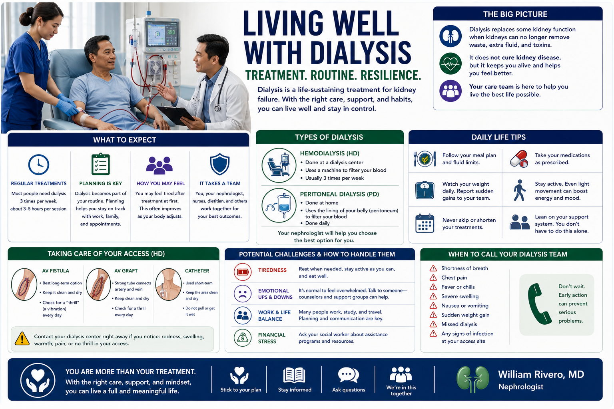
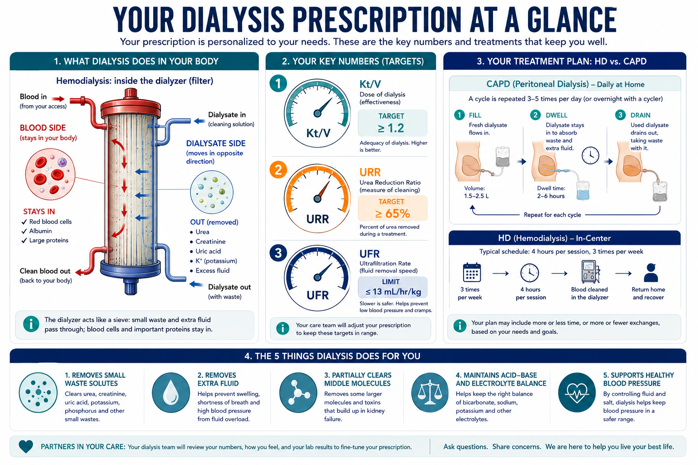
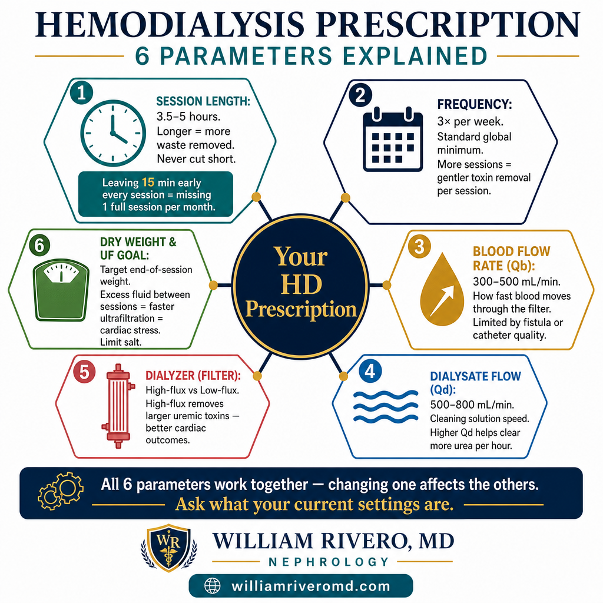
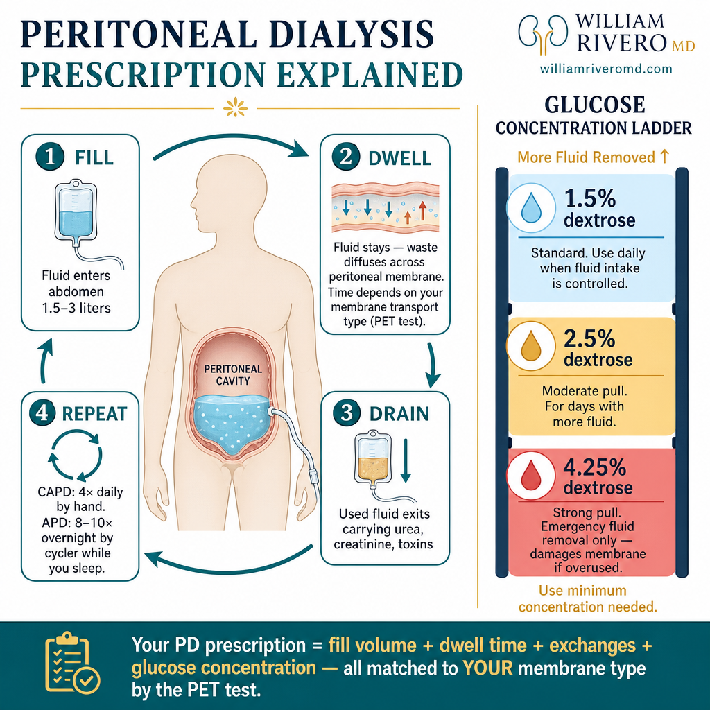
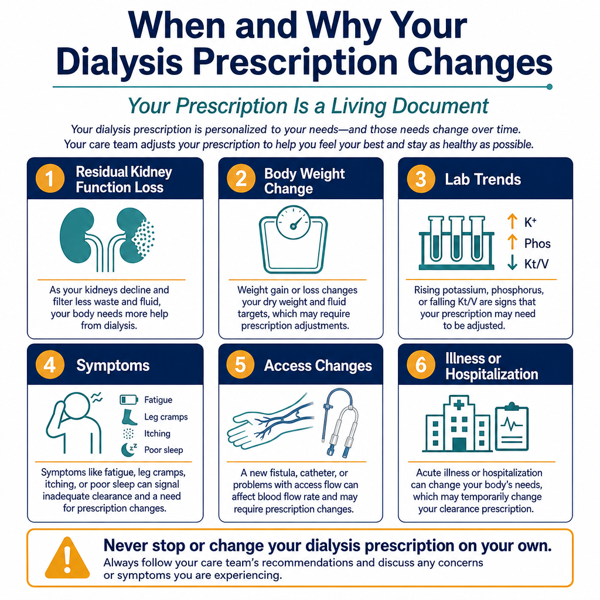
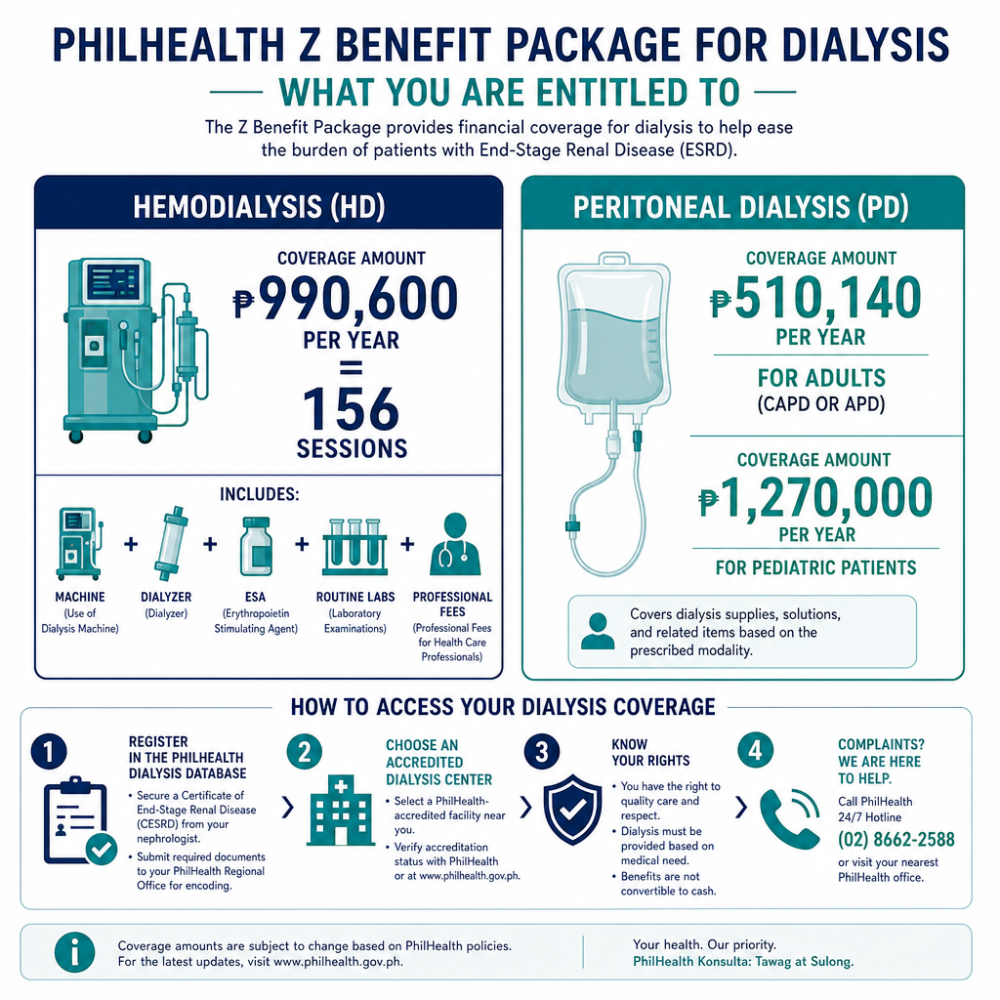
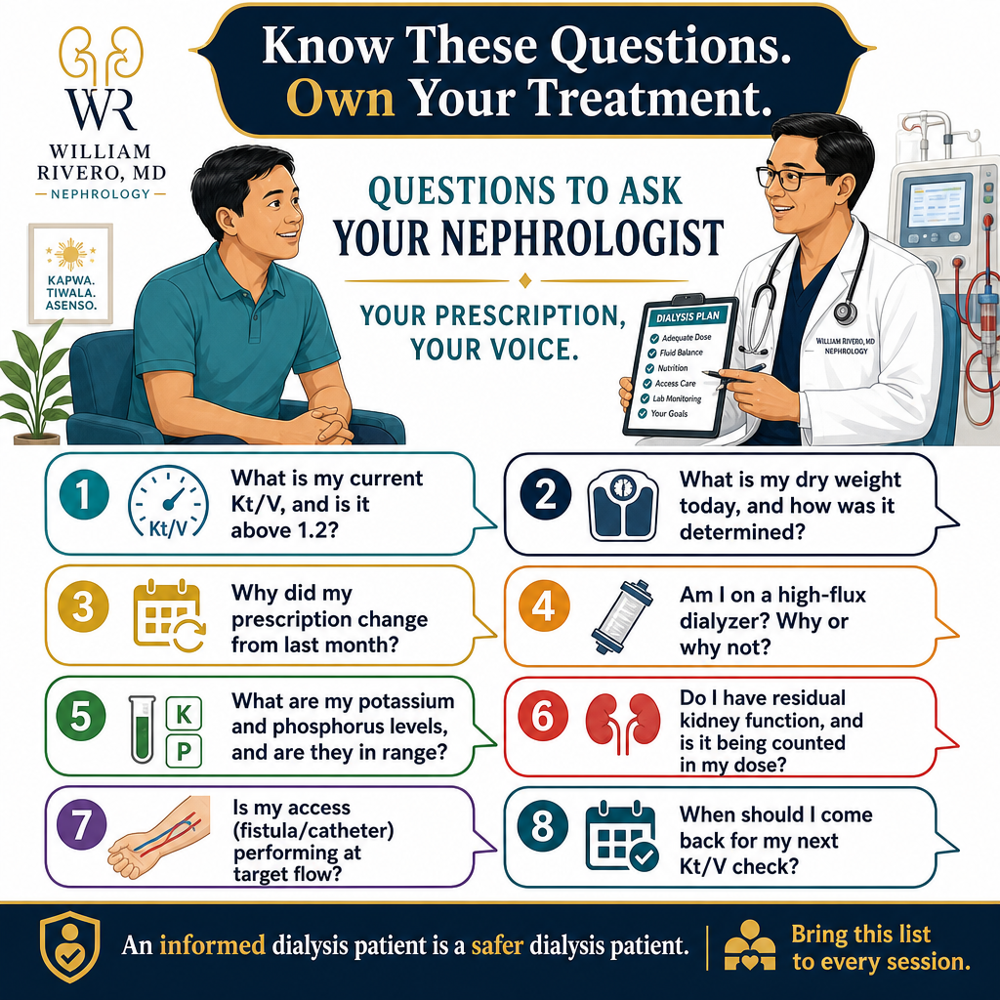
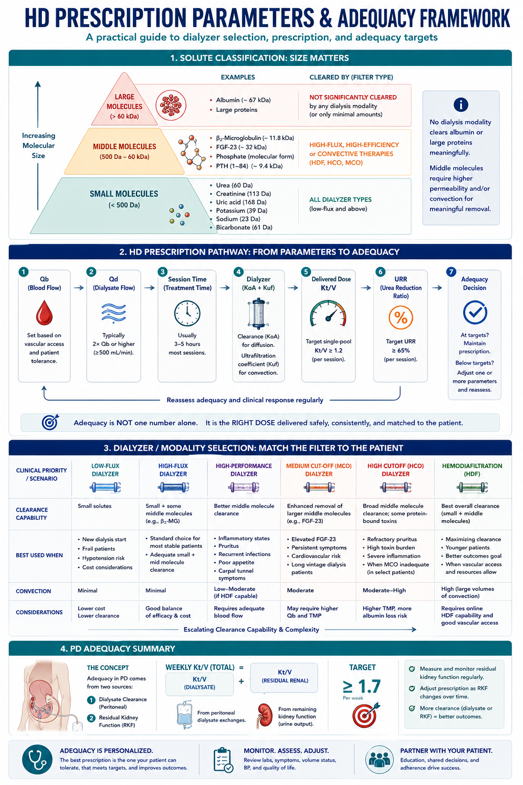
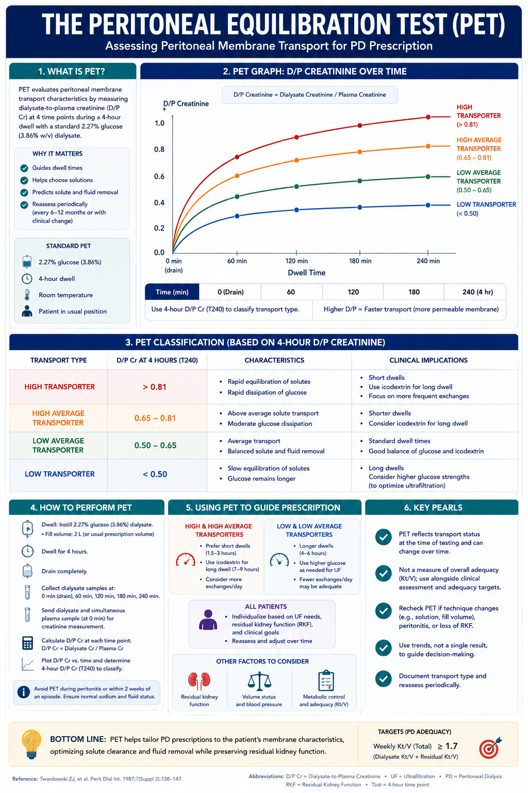
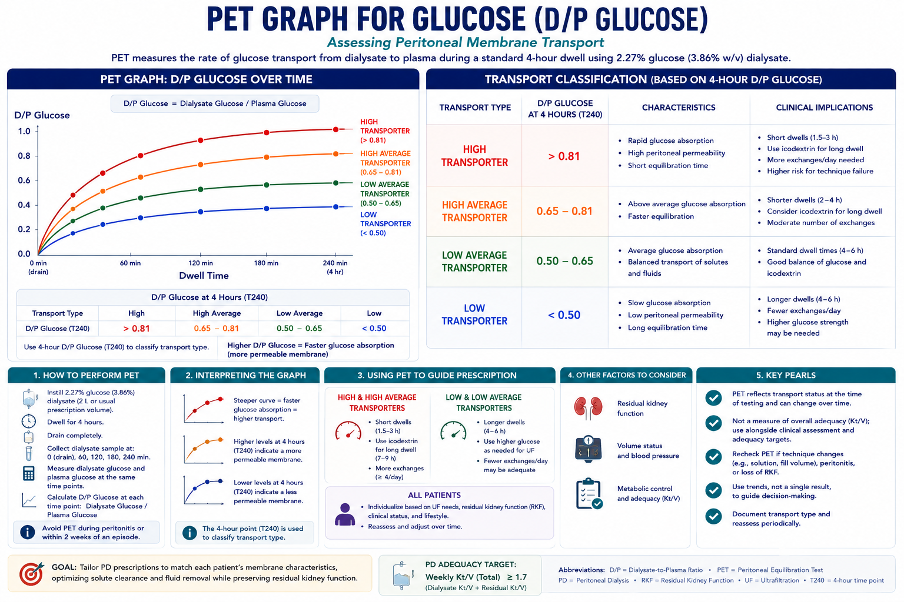

FoundationPundasyonPundasyonPundasyon
What a Dialysis Prescription IsAno ang Reseta sa DiyalisisUnsa ang Reseta sa DialysisAno ing Reseta sa Diyalisis

Think of your dialysis prescription as a personal recipe for cleaning your blood. Just as a recipe specifies ingredients, amounts, and cooking time — your prescription specifies how fast blood flows, how long the session runs, how much fluid is removed, and what type of filter is used. Change any one ingredient, and the result changes. Your nephrologist adjusts this recipe based on your labs, your weight, how you feel, and how much kidney function you still have.Isipin ang inyong reseta sa diyalisis bilang isang personal na resipe para sa paglilinis ng inyong dugo. Tulad ng isang resipe na nagtutukoy ng mga sangkap, dami, at oras ng pagluluto — ang inyong reseta ay nagtutukoy kung gaano kabilis daloy ang dugo, gaano katagal ang session, gaano karaming likido ang aalisin, at anong uri ng filter ang gagamitin. Baguhin ang kahit isang sangkap, at magbabago ang resulta. Inaayos ng inyong nephrologist ang resipeng ito batay sa inyong mga lab, timbang, pakiramdam, at gaano karami pang kidney function ang mayroon kayo.Hunahunaa ang imong reseta sa dialysis ingon usa ka personal nga resipe alang sa paglimpyo sa imong dugo. Sama sa usa ka resipe nga nagtino sa mga sangkap, gidaghanon, ug oras sa pagluto — ang imong reseta nagtino kung unsa ka dali ang pag-agos sa dugo, unsa ka dugay ang sesyon, pila ka likido ang kuhaon, ug unsang klase sa filter ang gamiton. Usba ang bisan usa ka sangkap, ug mabag-o ang resulta. Gi-adjust sa imong nephrologist kini nga resipe base sa imong mga lab, timbang, gibati, ug pila pa ang kidney function nga anaa kanimo.Isipin ing inyong reseta sa diyalisis bilang metung a personal na resipe para king paglilinis ning inyoning daya. Tulad ning metung a resipe na nagtutukoy ning deng sangkap, dami, at oras ning pagluluto — ing inyong reseta ya nagtutukoy nung gaano kabilis daloy ining daya, gaano katagal ing session, gaano karaming likido ing aalisin, at anong uri ning filter ing gagamitin. Baguhin ing kahit metung a sangkap, at magbabago ing resulta. Inaayos ning inyong nephrologist ing resipeng ini batay king ka deng lab, timbang, pakiramdam, at gaano karami paning kidney function ing mayroon kayu.
It is personalizedIto ay personalisadoKini personalisadoIni ya personalisado
Your prescription is based on your body size, lab results, residual kidney function, and the type of access you have. No two patients are exactly the same.Ang inyong reseta ay batay sa inyong sukat ng katawan, mga resulta ng lab, natitirang kidney function, at uri ng access na mayroon kayo. Walang dalawang pasyente na eksaktong magkapareho.Ang imong reseta base sa imong gidak-on sa lawas, mga resulta sa lab, nabilin nga kidney function, ug klase sa access nga anaa kanimo. Walay duha ka pasyente nga eksaktong managsama.Ing inyong reseta ya batay king ka sukat nining bangkî, deng resulta ning lab, natitiraning kidney function, at uri ning access na mayroon kayu. Alang dalawang pasyente na eksaktong magkapareho.
It is written by your nephrologistIto ay isinulat ng inyong nephrologistKini gisulat sa imong nephrologistIni ya isinulat ning inyong nephrologist
Your kidney doctor writes the order. The dialysis nurses and technicians follow it precisely every session. Any change — even small ones — requires a new order.Ang inyong kidney doctor ang sumusulat ng order. Ang mga dialysis nurse at technician ay sumusunod dito nang eksakto sa bawat session. Ang anumang pagbabago — kahit maliit — ay nangangailangan ng bagong order.Ang imong kidney doctor ang nagsulat sa order. Ang mga dialysis nurse ug technician nagsunod niini nga eksakto sa matag sesyon. Ang bisan unsang pagbag-o — bisan gamay — nagkinahanglan og bag-ong order.Ing inyoning kidney doctor ing sumusulat ning order. Deng dialysis nurse at technician ya sumusunod dini nang eksakto king bawat session. Ing anumang pagbabago — kahit maliit — ya nangangailangan ning bagong order.
It changes over timeNagbabago ito sa paglipas ng panahonNagbag-o kini sa paglabay sa panahonNagbabago ini sa paglipas ning panahon
As your condition evolves — weight changes, residual function declines, or symptoms emerge — your prescription is updated. This is normal and expected.Habang nagbabago ang inyong kondisyon — nagbabago ang timbang, bumababa ang natitirang function, o lumilitaw ang mga sintomas — ang inyong reseta ay ina-update. Ito ay normal at inaasahan.Samtang nagbag-o ang imong kondisyon — nagbag-o ang timbang, nanaog ang nabilin nga function, o nagsulod ang mga sintomas — ang imong reseta gi-update. Kini normal ug gipaabut.Habang nagbabago ing inyong kondisyon — nagbabago ing timbang, bumababa ing natitirang function, o lumilitaw deng sintomas — ing inyong reseta ya ina-update. Ini ya normal at inaasahan.
Two goals every sessionDalawang layunin sa bawat sessionDuha ka tumong sa matag sesyonDalawang layunin king bawat session
Every dialysis session does two things: removes waste products and removes excess fluid your kidneys can no longer excrete. Waste products fall into two categories — small solutes that dissolve freely in water (urea, creatinine, uric acid, potassium, sodium) and larger uremic toxins that require a high-flux filter to remove (β₂-microglobulin, FGF-23, PTH fragments). Standard dialysis targets small solutes; your filter type determines how well the larger ones are cleared.Ang bawat session ng diyalisis ay gumagawa ng dalawang bagay: inaalis ang mga dumi at inaalis ang sobrang likido na hindi na maaalis ng inyong mga bato. Ang mga dumi ay nahahati sa dalawang kategorya — maliliit na solute na natutunaw nang malaya sa tubig (urea, creatinine, uric acid, potassium, sodium) at mas malalaking uremic toxin na nangangailangan ng high-flux filter para maalis (β₂-microglobulin, FGF-23, PTH fragments). Tinutukoy ng standard na dialysis ang maliliit na solute; ang uri ng inyong filter ang nagtatakda kung gaano kahusay na nililinis ang mas malalaki.Ang matag sesyon sa dialysis naghimo og duha ka butang: nagtangtang sa mga basura ug nagtangtang sa sobrang likido nga dili na maibuga sa imong mga kidney. Ang mga basura nahulog sa duha ka kategorya — gagmay nga solute nga libre nga natunaw sa tubig (urea, creatinine, uric acid, potassium, sodium) ug mas dagkong uremic toxin nga nagkinahanglan og high-flux filter aron matangtang (β₂-microglobulin, FGF-23, PTH fragments). Ang standard nga dialysis nagtarget sa gagmay nga solute; ang klase sa imong filter nagtino kung unsa ka maayo ang paglimpyo sa mas dagko.Ing bawat session ning diyalisis ya gumagawa ning dalawang bagay: inaalis deng dumi at inaalis ing sobrang likido na ali na maaalis ning inyong dening batu. Deng dumi ya nahahati sa dalawang kategorya — maliliit na solute na natutunaw nang malaya sa danum (urea, creatinine, uric acid, potassium, sodium) at mas malalaking uremic toxin na nangangailangan ning high-flux filter para maalis (β₂-microglobulin, FGF-23, PTH fragments). Tinutukoy ning standard na dialysis ing maliliit na solute; ing uri ning inyong filter ing nagtatakda nung gaano kahusay na nililinis ing mas malalaki.
Hemodialysis vs Peritoneal DialysisHemodialysis kumpara sa Peritoneal DialysisHemodialysis kumpara sa Peritoneal DialysisHemodialysis kumpara king Perinineal Dialysis
Both modalities replace kidney function, but the prescription looks completely different depending on which type of dialysis you are on.Parehong pinapalitan ng dalawang modalidad ang kidney function, ngunit ang reseta ay ganap na magkaiba depende sa kung anong uri ng diyalisis kayo naka-on.Ang duha ka modalidad nagpuli sa kidney function, apan ang reseta hingpit nga lain-lain depende sa kung unsang klase sa dialysis ang imong gikuha.Parehong pinapalitan ning dalawang modalidad ining kidney function, ngarud ing reseta ya ganap na magkaiba depende sa nung anong uri ning diyalisis kayu naka-on.
Hemodialysis (HD)
Peritoneal Dialysis (PD)
Key NumbersMga Pangunahing NumeroMga Importanteng NumeroDeng Pangunahing Numero
Your Key Numbers at a GlanceAng Inyong Mga Pangunahing Numero sa Isang TinginAng Imong Mga Importanteng Numero sa Usa ka Talan-awonIng Inyong Deng Pangunahing Numero sa Isang Tingin
When you look at your dialysis lab results, you will see numbers that may seem confusing. Here is what the most important ones mean in plain language.Kapag tiningnan ninyo ang inyong mga resulta ng lab sa dialysis, makakakita kayo ng mga numero na maaaring mukhang nakalilito. Narito ang ibig sabihin ng mga pinakamahalagang numero sa simpleng wika.Kung tan-awon nimo ang imong mga resulta sa lab sa dialysis, makakita ka og mga numero nga mahimong magpaguol. Ania ang gipasabot sa mga labing importante sa yano nga pinulongan.Nung tiningnan ninyo ing inyong deng resulta ning lab king dialysis, makakakita kayu ning deng numero na maaaring mukhang nakalilini. Narini ing ibig sabihin ning deng pinakamahalagang numero sa simpleng wika.

What "adequate" dialysis means for daily lifeAno ang ibig sabihin ng "sapat" na dialysis para sa pang-araw-araw na buhayUnsa ang gipasabot sa "saktong" dialysis alang sa adlaw-adlaw nga kinabuhiAno ing ibig sabihin ning "sapat" na dialysis para king pang-aldo-aldo na biye
When your Kt/V is on target, you are more likely to feel less fatigued, have better appetite, sleep more soundly, and maintain stable blood pressure. Inadequate dialysis accumulates toxins slowly — you may feel it as increasing tiredness, itching, nausea, or mental fogginess before your labs reflect it.Kapag ang inyong Kt/V ay nasa target, mas malamang na mas mababa ang pagod ninyo, mas maganda ang gana sa pagkain, mas mahimbing ang tulog, at mas stable ang presyon ng dugo. Ang hindi sapat na dialysis ay dahan-dahang nagtitipon ng mga lason — maaari ninyong maramdaman ito bilang tumataas na pagod, pangangati, pagduduwal, o panlalamig ng isip bago pa ito makita sa inyong mga lab.Kung ang imong Kt/V naa sa target, mas lagmit nga mas diyutay ang imong pagkapagul, mas maayo ang gana sa pagkaon, mas himsog ang pagkatulog, ug mas stable ang presyon sa dugo. Ang dili saktong dialysis hinay-hinay nga nagtipon og mga lason — mahimong mabatyagan nimo kini ingon pagdugang nga pagkapagul, pangaol, nausea, o kaboang sa hunahuna sa wala pa kini makita sa imong mga lab.Nung ing inyong Kt/V ya nasa target, mas malamang na mas mababa ing pagod ninyo, mas maganda ing gana king pamangan, mas mahimbing ing tulog, at mas stable ining presyon nining daya. Ing ali sapat na dialysis ya dahan-dahang nagtitipon ning deng lason — maaari ninyong maramdaman ini bilang tumatas a pagod, pangangati, pagduduwal, o panlalamig ning isip bago pa ini makita king ka deng lab.
Your numbers are reviewed every monthAng inyong mga numero ay sinusuri bawat buwanAng imong mga numero gisusi matag bulanIng inyong deng numero ya sinusuri bawat bulan
Your nephrologist checks your Kt/V and URR from a blood draw taken during your session. If either is below target, the prescription is adjusted — longer sessions, higher blood flow, or a different filter. Do not skip monthly labs.Sinusuri ng inyong nephrologist ang inyong Kt/V at URR mula sa dugo na kinuha sa panahon ng inyong session. Kung ang alinman ay nasa ibaba ng target, inaayos ang reseta — mas matagal na session, mas mataas na daloy ng dugo, o ibang filter. Huwag laktawan ang buwanang mga lab.Gisusi sa imong nephrologist ang imong Kt/V ug URR gikan sa dugo nga gikuha sa panahon sa imong sesyon. Kung ang bisan hino niini ubos sa target, gi-adjust ang reseta — mas dugay nga sesyon, mas taas nga pag-agos sa dugo, o lain-laing filter. Ayaw laktaw sa buwanang mga lab.Sinusuri ning inyong nephrologist ing inyong Kt/V at URR mula sa daya na kinuha sa panahon ning inyong session. Nung ing alinman ya nasa ibaba ning target, inaayos ing reseta — mas matagal na session, mas matas a daloy nining daya, o ibang filter. Eka laktawan ining bulandeng lab.
HemodialysisHemodialysisHemodialysisHemodialysis
Your Hemodialysis Prescription ExplainedAng Inyong Reseta sa Hemodialysis na IpinaliwanagAng Imong Reseta sa Hemodialysis nga GipojnanIng Inyong Reseta sa Hemodialysis na Ipinaliwanag

If you are on hemodialysis, here is what each part of your prescription means and why it matters.Kung kayo ay nasa hemodialysis, narito ang ibig sabihin ng bawat bahagi ng inyong reseta at kung bakit ito mahalaga.Kung naa ka sa hemodialysis, ania ang gipasabot sa matag bahin sa imong reseta ug nganong importante kini.Nung kayu ya nasa hemodialysis, narini ing ibig sabihin ning bawat bahagi ning inyong reseta at nung bakit ini mahalaga.
Session Length — Usually 3.5 to 5 hoursHaba ng Session — Karaniwang 3.5 hanggang 5 orasGitas-on sa Sesyon — Kasagaran 3.5 hangtod 5 ka orasHaba ning Session — Karaniwang 3.5 anggang 5 oras
The single most important variable. Longer sessions remove more waste and fluid more gently. Cutting sessions short — even by 20 minutes — meaningfully reduces your Kt/V. Studies consistently show that patients who complete their full prescribed time live longer.Ang pinaka-importanteng variable. Ang mas matagal na session ay mas maraming dumi at likido ang naaalis nang mas malambot. Ang pagpapaikli ng session — kahit 20 minuto lang — ay makabuluhang nagbababa ng inyong Kt/V. Patuloy na nagpapakita ang mga pag-aaral na ang mga pasyenteng kumukumpleto ng kanilang buong iniresetang oras ay mas matagal mabuhay.Ang nag-inusarang labing importante nga variable. Ang mas dugay nga sesyon nagtangtang og mas daghang basura ug likido nga mas humok. Ang pagpugot sa sesyon — bisan 20 ka minuto — mahinungdanon nga nagpaubos sa imong Kt/V. Kanunay nagpakita ang mga pagtuon nga ang mga pasyente nga nakumpleto ang ilang tibuok iniresetang oras mas dugay magkinabuhi.Ing pinaka-importanteng variable. Ing mas matagal na session ya mas dacal a dumi at likido ing naaalis nang mas malambot. Ing pagpapaikli ning session — kahit 20 minuto lang — ya makabuluhang nagbababa ning inyong Kt/V. Patuloy na nagpapakita deng pag-aaral na deng pasyenteng kumukumpleto ning kanilang buong iniresetang oras ya mas matagal mabiye.
Frequency — Standard is 3 Times per WeekDalas — Ang Standard ay 3 Beses bawat LinggoKasagaran — Ang Standard 3 ka Beses matag SemanaDalas — Ing Standard ya 3 Beses bawat Lutu
Three sessions per week is the global standard for HD. More frequent dialysis (5–6x/week, as in home HD or nocturnal HD) removes more waste and fluid with less cardiovascular stress per session — but requires greater commitment and access to home setup.Ang tatlong session bawat linggo ay ang pandaigdigang standard para sa HD. Ang mas madalas na dialysis (5–6x/linggo, tulad ng home HD o nocturnal HD) ay nag-aalis ng mas maraming dumi at likido na may mas kaunting cardiovascular stress bawat session — ngunit nangangailangan ng mas malaking dedikasyon at access sa home setup.Ang tulo ka sesyon matag semana mao ang pangkalibutang standard alang sa HD. Ang mas kanunay nga dialysis (5–6x/semana, sama sa home HD o nocturnal HD) nagtangtang og mas daghang basura ug likido nga adunay mas gamay nga cardiovascular stress matag sesyon — apan nagkinahanglan og mas dako nga dedikasyon ug access sa home setup.Ing tatlong session bawat lutu ya ing pandaigdigang standard para king HD. Ing mas madalas na dialysis (5–6x/lutu, tulad ning home HD o nocturnal HD) ya nag-aalis ning mas dacal a dumi at likido na may mas kaunting cardiovascular stress bawat session — ngarud nangangailangan ning mas malda a dedikasyon at access sa home setup.
Blood Flow Rate (Qb) — Usually 300–500 mL/minBlood Flow Rate (Qb) — Karaniwang 300–500 mL/minBlood Flow Rate (Qb) — Kasagaran 300–500 mL/minBlood Flow Rate (Qb) — Karaniwang 300–500 mL/min
This is how fast blood is drawn from your body, through the filter, and returned. Faster blood flow generally means more waste removed per hour. Your access (fistula, graft, or catheter) determines how fast blood can safely flow.Ito ang bilis ng paghila ng dugo mula sa inyong katawan, sa pamamagitan ng filter, at ibinalik. Ang mas mabilis na daloy ng dugo ay karaniwang nangangahulugang mas maraming dumi ang naaalis bawat oras. Ang inyong access (fistula, graft, o catheter) ang nagtatakda kung gaano kabilis ang ligtas na daloy ng dugo.Mao kini kung unsa ka dali ang pag-guyod sa dugo gikan sa imong lawas, pinaagi sa filter, ug gibalik. Ang mas dali nga pag-agos sa dugo kasagaran nagpasabot og mas daghang basura nga natangtang matag oras. Ang imong access (fistula, graft, o catheter) nagtino kung unsa ka dali ang luwas nga pag-agos sa dugo.Ini ing bilis ning paghila nining daya mula sa inyoning bangkî, sa pamamagitan ning filter, at ibinalik. Ing mas mabilis na daloy nining daya ya karaniwang nangangahulugang mas dacal a dumi ing naaalis bawat oras. Ing inyong access (fistula, graft, o catheter) ing nagtatakda nung gaano kabilis ing ligtas na daloy nining daya.
Dialysate Flow (Qd) — Usually 500–800 mL/minDialysate Flow (Qd) — Karaniwang 500–800 mL/minDialysate Flow (Qd) — Kasagaran 500–800 mL/minDialysate Flow (Qd) — Karaniwang 500–800 mL/min
The cleaning solution flows on the other side of the filter membrane. Higher dialysate flow rates help clear more waste — particularly urea — during each session. Your doctor may increase this if your Kt/V needs improvement.Ang solusyon sa paglilinis ay dumadaan sa kabilang bahagi ng filter membrane. Ang mas mataas na dialysate flow rate ay tumutulong na mas maraming dumi ang naaalis — lalo na ang urea — sa bawat session. Maaaring dagdagan ito ng inyong doktor kung ang inyong Kt/V ay kailangan pang mapabuti.Ang solusyon sa paglimpyo nag-agos sa pikas bahin sa filter membrane. Ang mas taas nga dialysate flow rate nagtabang sa paglimpyo og mas daghang basura — ilabi na ang urea — sa matag sesyon. Mahimong dugangan kini sa imong doktor kung ang imong Kt/V nagkinahanglan og pagpabuti.Ing solusyon sa paglilinis ya dumadaan sa kabilang bahagi ning filter membrane. Ing mas matas a dialysate flow rate ya tumutulong na mas dacal a dumi ing naaalis — lalo na ing urea — king bawat session. Maaaring dagdagan ini ning inyong doktor nung ing inyong Kt/V ya kailangan pang mapabuti.
The Dialyzer (Filter / Membrane)Ang Dialyzer (Filter / Membrane)Ang Dialyzer (Filter / Membrane)Ing Dialyzer (Filter / Membrane)
This is the artificial kidney. High-flux dialyzers remove larger uremic toxins that standard (low-flux) membranes do not clear. Most modern centers use high-flux dialyzers as the default because evidence shows better outcomes — especially fewer cardiac events.Ito ang artipisyal na bato. Ang mga high-flux dialyzer ay nag-aalis ng mas malalaking uremic toxin na hindi nililinis ng standard (low-flux) na membrane. Karamihan sa mga modernong sentro ay gumagamit ng high-flux na dialyzer bilang default dahil nagpapakita ang ebidensya ng mas magandang mga resulta — lalo na ang mas kaunting cardiac events.Mao kini ang artipisyal nga kidney. Ang mga high-flux dialyzer nagtangtang sa mas dagkong uremic toxin nga dili malimpyohan sa standard (low-flux) nga membrane. Kadaghanan sa mga modernong sentro mogamit sa high-flux dialyzer ingon default tungod kay nagpakita ang ebidensya og mas maayo nga mga resulta — ilabi na ang mas gamay nga cardiac events.Ini ing artipisyal na batu. Deng high-flux dialyzer ya nag-aalis ning mas malalaking uremic toxin na ali nililinis ning standard (low-flux) na membrane. Karamihan sa deng modernong sentro ya gumagamit ning high-flux na dialyzer bilang default dahil nagpapakita ing ebidensya ning mas maganddeng resulta — lalo na ing mas kaunting cardiac events.
Ultrafiltration Goal — Based on Your Dry WeightLayunin ng Ultrafiltration — Batay sa Inyong Dry WeightTumong sa Ultrafiltration — Base sa Imong Dry WeightLayunin ning Ultrafiltration — Batay sa Inyong Dry Weight
Your "dry weight" is the target weight your doctor wants you to reach by the end of the session — the weight at which you have no excess fluid. The machine removes fluid at a calculated rate. If you gain a lot of fluid between sessions, the rate has to be faster, which stresses the heart. This is why limiting salt and fluid between sessions matters so much.Ang inyong "dry weight" ay ang target na timbang na gusto ng inyong doktor na maabot ninyo sa katapusan ng session — ang timbang kung saan wala kayong sobrang likido. Ang makina ay nag-aalis ng likido sa isang kinakalkula na rate. Kung marami kayong likidong nadadagdag sa pagitan ng mga session, ang rate ay kailangang mas mabilis, na nagdudulot ng stress sa puso. Kaya naman napakahalaga ng paglilimitahan ng asin at likido sa pagitan ng mga session.Ang imong "dry weight" mao ang target nga timbang nga gusto sa imong doktor nga maabot nimo sa katapusan sa sesyon — ang timbang nga walay sobrang likido. Ang makina nagtangtang sa likido sa usa ka gikalkulahang rate. Kung daghan kag likido nga nadagdag tali sa mga sesyon, ang rate kinahanglan nga mas dali, nga nagbutang og stress sa puso. Mao kini ang hinungdan kung nganong importante kaayo ang paglimitahan sa asin ug likido tali sa mga sesyon.Ing inyong "dry weight" ya ing target na timbang na gusto ning inyong doktor na maabot ninyo sa katapusan ning session — ing timbang nung saan ala kayung sobrang likido. Ing makina ya nag-aalis ning likido sa metung a kinakalkula na rate. Nung marami kayung likidong nadadagdag sa pagitan ning deng session, ing rate ya kailangang mas mabilis, na nagdudulot ning stress sa pusu. Kaya naman napakahalaga ning paglilimitahan ning asin at likido sa pagitan ning deng session.
Do not leave your session earlyHuwag umalis ng maaga sa inyong sessionAyaw mobiya sa imong sesyon nga sayoEka umalis ning maaga king ka session
Dialysis machines count time precisely. Leaving 15 minutes early every session adds up to missing an entire session over a month. Each incomplete session means toxins accumulate, dry weight is not reached, and your Kt/V falls. If you feel unwell during dialysis, tell the nurse — do not simply leave.Ang mga makina ng dialysis ay nagbibilang ng oras nang eksakto. Ang pag-alis ng 15 minuto nang maaga sa bawat session ay katumbas ng isang buong session na nalaktawan sa loob ng isang buwan. Ang bawat hindi kumpletong session ay nangangahulugang nag-iipon ang mga lason, hindi naaabot ang dry weight, at bumabagsak ang inyong Kt/V. Kung hindi kayo maganda ang pakiramdam sa panahon ng dialysis, sabihin sa nurse — huwag basta umalis.Ang mga makina sa dialysis nagihap sa oras nga eksakto. Ang pagbiya og 15 ka minuto nga sayo sa matag sesyon nagdugang hangtod sa usa ka tibuok sesyon nga nalaktaw sulod sa usa ka buwan. Ang matag dili kompleto nga sesyon nagpasabot nga nagtipon ang mga lason, dili maabot ang dry weight, ug nahulog ang imong Kt/V. Kung dili ka maayo ang gibati sa panahon sa dialysis, sultihi ang nurse — ayaw lang mobiya.Deng makina ning dialysis ya nagbibilang ning oras nang eksakto. Ing pag-alis ning 15 minuto nang maaga king bawat session ya katumbas ning metung a buong session na nalaktawan sa loob ning metung a bulan. Ing bawat ali kumpletong session ya nangangahulugang nag-iipon deng lason, ali naaabot ing dry weight, at bumabagsak ing inyong Kt/V. Nung ali kayu maganda ing pakiramdam sa panahon ning dialysis, sabihin sa nurse — eka basta umalis.
Peritoneal DialysisPeritoneal DialysisPeritoneal DialysisPerinineal Dialysis
Your Peritoneal Dialysis Prescription ExplainedAng Inyong Reseta sa Peritoneal Dialysis na IpinaliwanagAng Imong Reseta sa Peritoneal Dialysis nga GipojnanIng Inyong Reseta sa Perinineal Dialysis na Ipinaliwanag

If you are on peritoneal dialysis, the prescription looks different — but the goal is the same: remove enough waste and fluid each day to protect your health.Kung kayo ay nasa peritoneal dialysis, ang reseta ay magkaibang hitsura — ngunit ang layunin ay pareho: mag-alis ng sapat na dumi at likido bawat araw upang mapangalagaan ang inyong kalusugan.Kung naa ka sa peritoneal dialysis, ang reseta nagtan-aw nga lain — apan ang tumong pareho: tangtangon ang saktong basura ug likido matag adlaw aron mapanalipdan ang imong kahimsog.Nung kayu ya nasa perinineal dialysis, ing reseta ya magkaibang hitsura — ngarud ing layunin ya pareho: mag-alis ning sapat na dumi at likido bawat aldo para mapangalagaan ing inyong kalusugan.
Fill VolumeFill VolumeFill VolumeFill Volume
How much dialysis fluid (usually 1.5–3 liters) goes into your abdomen each exchange. Larger volumes remove more waste but may cause discomfort or breathing difficulty if you are small-framed.Kung gaano karaming dialysis fluid (karaniwang 1.5–3 litro) ang pumapasok sa inyong tiyan bawat exchange. Ang mas malaking dami ay nag-aalis ng mas maraming dumi ngunit maaaring magdulot ng diskomfort o kahirapan sa paghinga kung kayo ay may maliit na katawan.Kung pila ka dialysis fluid (kasagaran 1.5–3 ka litro) ang mosulod sa imong tiyan matag exchange. Ang mas dagkong gidaghanon nagtangtang og mas daghang basura apan mahimong magdala og diskomport o kahirapan sa pagginhawa kung gamay ang imong lawas.Nung gaano karaming dialysis fluid (karaniwang 1.5–3 litro) ing pumapasok king ka tiyan bawat exchange. Ing mas malda a dami ya nag-aalis ning mas dacal a dumi ngarud maaaring magdulot ning diskomfort o kahirapan sa paghinga nung kayu ya may maliit na bangkî.
Dwell TimeDwell TimeDwell TimeDwell Time
How long the fluid stays inside before it is drained. Longer dwell times remove more fluid but less solute after equilibration is reached. Your nephrologist matches dwell time to your membrane transport type.Kung gaano katagal ang likido sa loob bago ito alisan. Ang mas matagal na dwell time ay nag-aalis ng mas maraming likido ngunit mas kaunting solute pagkatapos maabot ang equilibration. Ang inyong nephrologist ay nagtatugma ng dwell time sa uri ng transport ng inyong membrane.Kung unsa ka dugay ang likido sa sulod sa wala pa kini alusan. Ang mas dugay nga dwell time nagtangtang og mas daghang likido apan mas gamay nga solute pagkahuman maabot ang equilibration. Ang imong nephrologist nagpares sa dwell time sa klase sa transport sa imong membrane.Nung gaano katagal ing likido sa loob bago ini alisan. Ing mas matagal na dwell time ya nag-aalis ning mas dacal a likido ngarud mas kaunting solute kapabanuan maabot ing equilibration. Ing inyong nephrologist ya nagtatugma ning dwell time sa uri ning transport ning inyong membrane.
Number of ExchangesBilang ng mga ExchangeGidaghanon sa mga ExchangeBilang ning deng Exchange
How many fill-dwell-drain cycles occur per day. Standard CAPD is 4 exchanges per day. Your total daily clearance depends on the number of exchanges and how well your peritoneal membrane transports.Kung gaano karaming fill-dwell-drain cycles ang nagaganap bawat araw. Ang standard na CAPD ay 4 exchanges bawat araw. Ang inyong kabuuang pang-araw-araw na clearance ay nakasalalay sa bilang ng exchanges at kung gaano kahusay ang transport ng inyong peritoneal membrane.Kung pila ka fill-dwell-drain cycles ang mahitabo matag adlaw. Ang standard nga CAPD 4 ka exchanges matag adlaw. Ang imong tibuok adlaw-adlaw nga clearance nagdepende sa gidaghanon sa exchanges ug kung unsa ka maayo ang transport sa imong peritoneal membrane.Nung gaano karaming fill-dwell-drain cycles ing nagaganap bawat aldo. Ing standard na CAPD ya 4 exchanges bawat aldo. Ing inyong kabuuang pang-aldo-aldo na clearance ya nakasalalay sa bilang ning exchanges at nung gaano kahusay ing transport ning inyong perinineal membrane.
CAPD vs APDCAPD kumpara sa APDCAPD kumpara sa APDCAPD kumpara king APD
CAPD (manual) is done by hand 4 times daily. APD (automated, using a cycler) does multiple exchanges overnight while you sleep and is often preferred for working patients and children.Ang CAPD (mano-mano) ay ginagawa ng kamay nang 4 beses sa isang araw. Ang APD (awtomatiko, gamit ang cycler) ay gumagawa ng maraming exchanges sa magdamag habang natutulog kayo at madalas na mas gusto ng mga nagtatrabahong pasyente at mga bata.Ang CAPD (mano-mano) gihimo sa kamot 4 ka beses matag adlaw. Ang APD (awtomatiko, gamit ang cycler) naghimo og daghang exchanges sa tibuok gabii samtang natulog ka ug kasagaran mas gusto sa mga nagtatrabahong pasyente ug mga bata.Ing CAPD (mano-mano) ya ginagawa ning kamay nang 4 beses sa metung a aldo. Ing APD (awtomatiko, gamit ing cycler) ya gumagawa ning dacal a exchanges sa magdamag habang natutulog kayu at madalas na mas gusto ning deng nagtaobranng pasyente at deng bata.
Understanding Your Dialysate ConcentrationPag-unawa sa Inyong Dialysate ConcentrationPagsabot sa Imong Dialysate ConcentrationPag-unawa sa Inyong Dialysate Concentration
PD fluid comes in different glucose concentrations — 1.5%, 2.5%, and 4.25%. Higher concentrations pull more fluid out of your body. Your prescription specifies which concentration to use for each exchange based on how much fluid you need to remove that day. Using stronger bags too often damages the peritoneal membrane over time, so your doctor uses the minimum concentration needed.Ang PD fluid ay may iba't ibang glucose concentration — 1.5%, 2.5%, at 4.25%. Ang mas mataas na concentration ay humihila ng mas maraming likido mula sa inyong katawan. Ang inyong reseta ay nagtutukoy kung anong concentration ang gagamitin para sa bawat exchange batay sa dami ng likido na kailangang alisin sa araw na iyon. Ang madalas na paggamit ng mas malakas na bags ay nagdudulot ng pinsala sa peritoneal membrane sa paglipas ng panahon, kaya ginagamit ng inyong doktor ang pinakamababang concentration na kailangan.Ang PD fluid adunay lain-laing glucose concentration — 1.5%, 2.5%, ug 4.25%. Ang mas taas nga concentration naghikot og mas daghang likido gikan sa imong lawas. Ang imong reseta nagtino kung unsang concentration ang gamiton alang sa matag exchange base sa gidaghanon sa likido nga kinahanglan tangtangon nianang adlawa. Ang kanunay nga paggamit sa mas kusog nga bags nagdaot sa peritoneal membrane sa paglabay sa panahon, busa ang imong doktor mogamit sa labing ubos nga concentration nga gikinahanglan.Ing PD fluid ya may iba't ibang glucose concentration — 1.5%, 2.5%, at 4.25%. Ing mas matas a concentration ya humihila ning mas dacal a likido mula sa inyoning bangkî. Ing inyong reseta ya nagtutukoy nung anong concentration ing gagamitin para king bawat exchange batay sa dami ning likido na kailangang alisin sa aldo na iyun. Ing madalas na paggamit ning mas malakas na bags ya nagdudulot ning pinsala sa perinineal membrane sa paglipas ning panahon, kaya ginagamit ning inyong doktor ing pinakamababang concentration na kailangan.
Your peritoneal membrane is unique to youAng inyong peritoneal membrane ay natatangi sa inyoAng imong peritoneal membrane talagsaon alang kanimoIng inyong perinineal membrane ya natatangi sa inyo
A test called the Peritoneal Equilibration Test (PET) measures how fast your membrane transports waste and fluid. High transporters clear waste quickly but lose fluid fast — they often do better on APD with short dwells. Low transporters need longer dwell times. Your PD prescription is built around your PET result.Ang isang pagsusuri na tinatawag na Peritoneal Equilibration Test (PET) ay sumusukat kung gaano kabilis ang transport ng inyong membrane para sa dumi at likido. Ang mga high transporter ay mabilis na naglilinis ng dumi ngunit mabilis din na nawawalan ng likido — madalas silang mas mahusay sa APD na may maikling dwells. Ang mga low transporter ay nangangailangan ng mas matagal na dwell times. Ang inyong PD prescription ay binuo batay sa inyong PET result.Ang usa ka pagsusi nga gitawag nga Peritoneal Equilibration Test (PET) nagsukod kung unsa ka dali ang transport sa imong membrane alang sa basura ug likido. Ang mga high transporter dali nga naglimpyo sa basura apan dali usab nga nawad-an sa likido — kasagaran mas maayo sila sa APD nga adunay mubo nga dwells. Ang mga low transporter nagkinahanglan og mas dugay nga dwell times. Ang imong PD prescription gitukod base sa imong PET result.Ing metung a pagsusuri na tinatawag na Perinineal Equilibration Test (PET) ya sumusukat nung gaano kabilis ing transport ning inyong membrane para king dumi at likido. Deng high transporter ya mabilis na naglilinis ning dumi ngarud mabilis din na nawaalan ning likido — madalas silang mas mahusay sa APD na may maikling dwells. Deng low transporter ya nangangailangan ning mas matagal na dwell times. Ing inyong PD prescription ya binuo batay king ka PET result.
Watch for signs your prescription needs adjustmentBantayan ang mga palatandaan na kailangan ng pagbabago ang inyong resetaBantayan ang mga timailhan nga nagkinahanglan og pag-adjust ang imong resetaBantayan deng palatandaan na kailangan ning pagbabago ing inyong reseta
- Swelling in your ankles or face that does not resolve overnightPamamaga sa inyong mga bukung-bukong o mukha na hindi nawawala sa magdamagPamanas sa imong mga bukobuko o nawong nga dili mawala sa tibuok gabiiPamamaga king ka deng bunung-bukong o mukha na ali nawaala sa magdamag
- Gaining more than 1–2 kg between clinic visits despite following your prescriptionPagdagdag ng higit sa 1–2 kg sa pagitan ng mga clinic visit kahit sinusunod ang inyong resetaPagdagdag og labaw sa 1–2 kg tali sa mga clinic visit bisan nagsunod sa imong resetaPagdagdag ning higit sa 1–2 kg sa pagitan ning deng clinic visit kahit sinusunod ing inyong reseta
- Fatigue or brain fog worsening over several weeks (may indicate inadequate solute clearance)Pagod o kalituhan ng isip na lumalalang sa loob ng ilang linggo (maaaring magpahiwatig ng hindi sapat na solute clearance)Pagkapagul o kaboang sa hunahuna nga naggrabing sulod sa pipila ka semana (mahimong magtimaan sa dili saktong solute clearance)Pagod o kalituhan ning isip na lumalalang sa loob ning ilaning lutu (maaaring magpahiwatig ning ali sapat na solute clearance)
- Cloudy PD fluid — this is urgent; call your dialysis team immediately as it may indicate peritonitisMaligalig na PD fluid — ito ay apurahan; tawagan agad ang inyong dialysis team dahil maaari itong magpahiwatig ng peritonitisMaalon nga PD fluid — kini urgent; tawagan dayon ang imong dialysis team tungod mahimong magtimaan kini sa peritonitisMaligalig na PD fluid — ini ya apurahan; tawagan agad ing inyong dialysis team dahil maaari ining magpahiwatig ning perininitis
MonitoringPagsubaybayPagbantayPagsubaybay
When & Why Your Prescription ChangesKailan at Bakit Nagbabago ang Inyong ResetaKanus-a ug Nganong Nagbag-o ang Imong ResetaKailan at Bakit Nagbabago ing Inyong Reseta

Your dialysis prescription is a living document. Here are the most common reasons it gets adjusted — and what those adjustments mean for you.Ang inyong reseta sa dialysis ay isang buhay na dokumento. Narito ang mga pinaka-karaniwang dahilan kung bakit ito inaayos — at kung ano ang ibig sabihin ng mga pagbabagong iyon para sa inyo.Ang imong reseta sa dialysis usa ka buhi nga dokumento. Ania ang mga labing kasagarang hinungdan kung nganong kini gi-adjust — ug unsa ang gipasabot sa mga pagbag-o alang kanimo.Ing inyong reseta king dialysis ya metung a biye na dokumento. Narini deng pinaka-karaniwang dahilan nung bakit ini inaayos — at nung ano ing ibig sabihin ning deng pagbabagong iyun para king inyo.
Residual Kidney Function DeclinesBumababa ang Natitirang Kidney FunctionNanaog ang Nabilin nga Kidney FunctionBumababa ing Natitirang Kidney Function
If your own kidneys are still producing some urine, they contribute to clearance. As this residual function is lost over months to years, your prescription must compensate — often with longer sessions or more frequent exchanges.Kung ang inyong sariling mga bato ay gumagawa pa rin ng ilang ihi, sila ay nag-aambag sa clearance. Habang nawawala ang natitirang function na ito sa loob ng mga buwan hanggang taon, ang inyong reseta ay dapat mag-compensate — kadalasan sa pamamagitan ng mas matagal na session o mas madalas na exchanges.Kung ang imong kaugalingon nga mga kidney naghimo pa og gamay nga ihi, nag-amot sila sa clearance. Samtang nawad-an kini nga nabilin nga function sulod sa mga bulan hangtod sa mga tuig, ang imong reseta kinahanglan mag-compensate — kasagaran pinaagi sa mas dugay nga sesyon o mas kanunay nga exchanges.Nung ing inyong sariling dening batu ya gumagawa pa rin ning ilang ihi, sila ya nag-aambag sa clearance. Habang nawaala ing natitirang function na ini sa loob ning dening bulan hangganing banua, ing inyong reseta ya dapat mag-compensate — kadalasan sa pamamagitan ning mas matagal na session o mas madalas na exchanges.
Weight ChangesPagbabago ng TimbangPagbag-o sa TimbangPagbabago ning Timbang
If you gain significant body weight (muscle, not fluid), your dry weight target increases and more dialysis dose may be needed. The same applies if you lose weight — the prescription may be scaled back.Kung kayo ay nagdagdag ng makabuluhang timbang ng katawan (kalamnan, hindi likido), ang inyong dry weight target ay tataas at maaaring kailangan ang mas maraming dialysis dose. Ganoon din kung kayo ay pumayat — ang reseta ay maaaring mabawasan.Kung nagdagdag ka og mahinungdanon nga timbang sa lawas (kaunoran, dili likido), ang imong dry weight target modako ug mahimong kinahanglan og mas daghang dialysis dose. Mao usab kung mipayat ka — ang reseta mahimong mabawasan.Nung kayu ya nagdagdag ning makabuluhang timbang nining bangkî (kalamnan, ali likido), ing inyong dry weight target ya tataas at maaaring kailangan ing mas dacal a dialysis dose. Ganoon din nung kayu ya pumayat — ing reseta ya maaaring mabawasan.
Lab TrendsMga Trend sa LabMga Trend sa LabDeng Trend sa Lab
Monthly Kt/V below 1.2, rising phosphorus, worsening anemia, or elevated potassium all signal that something in the prescription or diet needs adjustment.Ang buwanang Kt/V na mas mababa sa 1.2, tumataas na phosphorus, lumalalang anemia, o mataas na potassium ay lahat ay nagpapahiwatig na may kailangang i-ayos sa reseta o diyeta.Ang buwanang Kt/V nga ubos sa 1.2, mosaka nga phosphorus, naggrabing anemia, o mataas nga potassium tanan nagsiyal nga adunay kinahanglan i-adjust sa reseta o diyeta.Ining bulanang Kt/V na mas mababa sa 1.2, tumatas a phosphorus, lumalalang anemia, o matas a potassium ya lahat ya nagpapahiwatig na may kailangang i-ayos sa reseta o diyeta.
Symptom BurdenBigat ng mga SintomasBugat sa mga SintomasBigat ning deng Sintomas
Increasing fatigue, itching (pruritus), restless legs, nausea, or poor appetite — even with "normal" labs — can indicate under-dialysis. Symptoms often precede lab deterioration.Tumataas na pagod, pangangati (pruritus), hindi mapakaling mga binti, pagduduwal, o masamang gana sa pagkain — kahit na may "normal" na mga lab — ay maaaring magpahiwatig ng hindi sapat na dialysis. Ang mga sintomas ay madalas na nauuna sa pagbaba ng mga lab.Nagdugang nga pagkapagul, pangaol (pruritus), wala mapahulaya nga mga bitiis, nausea, o dili maayo nga gana sa pagkaon — bisan pa sa "normal" nga mga lab — mahimong magtimaan sa dili saktong dialysis. Ang mga sintomas kasagaran nag-una sa pagkadaot sa mga lab.Tumatas a pagod, pangangati (pruritus), ali mapakaling deng binti, pagduduwal, o masamang gana king pamangan — kahit na may "normal" na deng lab — ya maaaring magpahiwatig ning ali sapat na dialysis. Deng sintomas ya madalas na nauuna sa pagbaba ning deng lab.
Access ChangesMga Pagbabago sa AccessMga Pagbag-o sa AccessDeng Pagbabago sa Access
A new fistula may allow higher blood flow rates. A clotted or poorly functioning access may limit flow, reducing your Kt/V until the problem is corrected.Ang isang bagong fistula ay maaaring magpahintulot ng mas mataas na blood flow rate. Ang isang nabing o hindi maayos na gumaganang access ay maaaring maglimitahan ng daloy, nagpapababa ng inyong Kt/V hanggang maayos ang problema.Ang usa ka bag-ong fistula mahimong motugot sa mas taas nga blood flow rate. Ang usa ka natapong o dili maayong nagtrabaho nga access mahimong molimitahan sa pag-agos, nagpaubos sa imong Kt/V hangtod maayos ang problema.Ing metung a bagong fistula ya maaaring magpahintulot ning mas matas a blood flow rate. Ing metung a nabing o ali maayos na gumaganang access ya maaaring maglimitahan ning daloy, nagpapababa ning inyong Kt/V anggang maayos ing problema.
Intercurrent IllnessKasabay na SakitDungan nga SakitKasabay na Sakit
Infection, hospitalization, or significant dietary changes can temporarily alter your clearance needs. Your team will often reassess the prescription after any major health event.Ang impeksyon, ospitalisasyon, o makabuluhang pagbabago sa diyeta ay maaaring pansamantalang baguhin ang inyong mga pangangailangan sa clearance. Ang inyong team ay madalas na muling susuriin ang reseta pagkatapos ng anumang malaking kaganapan sa kalusugan.Ang impeksyon, ospitalisasyon, o mahinungdanon nga pagbag-o sa diyeta mahimong pansamantalang mabag-o ang imong mga panginahanglan sa clearance. Ang imong team kasagaran mausab ang pagsusi sa reseta pagkahuman sa bisan unsang dakong hitabo sa kahimsog.Ing impeksyon, ospitalisasyon, o makabuluhang pagbabago king diyeta ya maaaring pansamantalang baguhin ing inyong deng pangangailangan sa clearance. Ing inyong team ya madalas na muling susuriin ing reseta kapabanuan ning anumang malda a kaganapan sa kalusugan.
MonitoringPagsubaybayPagbantayPagsubaybay
Recommended Follow-Up Lab ScheduleInirerekomendang Iskedyul ng Sunod-na-LabGirekomendar nga Iskedyul sa Sunod-labInirerekomendang Iskedyul ning Sunod-na-Lab
Dialysis is not just about the session — it requires regular blood tests to make sure your prescription is working and your body is staying in balance. Here is what your team checks and how often.Ang dialysis ay hindi lamang tungkol sa session — nangangailangan ito ng regular na pagsusuri ng dugo upang masiguro na gumagana ang inyong reseta at nananatiling balanse ang inyong katawan. Narito ang sinusuri ng inyong team at kung gaano kadalas.Ang dialysis dili lamang bahin sa sesyon — nagkinahanglan kini og regular nga pagsusi sa dugo aron masiguro nga nagtrabaho ang imong reseta ug nagpabilin nga balanse ang imong lawas. Ania ang gisusi sa imong team ug kung unsa ka kanunay.Ing dialysis ya ali lamang tungkol sa session — nangangailangan ini ning regular na pagsusuri nining daya para masiguro na gumagana ing inyong reseta at nananatiling balanse ing inyoning bangkî. Narini ing sinusuri ning inyong team at nung gaano kadalas.
Why labs matter as much as the session itselfBakit kasinghalaga ang mga lab gaya ng mismong sessionNganong pareho ka importanti ang mga lab sama sa sesyon mismoBakit kasinghalaga deng lab gaya ning mismong session
Lab results are how your nephrologist knows whether your prescription is working. A low Kt/V triggers a longer session. A rising phosphorus triggers a diet review. A falling hemoglobin triggers an ESA dose adjustment. Missing labs means missing the signal to act before problems become serious.Ang mga resulta ng lab ang paraan ng inyong nephrologist para malaman kung gumagana ang inyong reseta. Ang mababang Kt/V ay nag-trigger ng mas matagal na session. Ang tumataas na phosphorus ay nag-trigger ng pagsusuri ng diyeta. Ang bumababang hemoglobin ay nag-trigger ng pag-aayos ng dosis ng ESA. Ang paglaktaw ng mga lab ay nangangahulugang paglaktaw ng signal para kumilos bago pa maging seryoso ang mga problema.Ang mga resulta sa lab mao ang paagi sa imong nephrologist aron mahibalo kung nagtrabaho ba ang imong reseta. Ang ubos nga Kt/V nag-trigger sa mas dugay nga sesyon. Ang mosaka nga phosphorus nag-trigger sa pagsusi sa diyeta. Ang monaog nga hemoglobin nag-trigger sa pag-adjust sa dosis sa ESA. Ang paglaktaw sa mga lab nagpasabot og paglaktaw sa siyal aron molihok sa wala pa mahimong grabe ang mga problema.Deng resulta ning lab ing paraan ning inyong nephrologist para malaman nung gumagana ing inyong reseta. Ing mababang Kt/V ya nag-trigger ning mas matagal na session. Ing tumatas a phosphorus ya nag-trigger ning pagsusuri ning diyeta. Ing bumababang hemoglobin ya nag-trigger ning pag-aayos ning dosis ning ESA. Ing paglaktaw ning deng lab ya nangangahulugang paglaktaw ning signal para kumilos bago pa maging seryoso deng problema.
| FrequencyDalasKasagaranDalas | TestPagsusuriPagsusiPagsusuri | What It ChecksAno ang SinusuriUnsa ang GisusiAno ing Sinusuri |
|---|---|---|
| Every sessionBawat sessionMatag sesyonBawat session | Pre- and post-BUN (blood urea nitrogen)Pre- at post-BUN (blood urea nitrogen)Pre- ug post-BUN (blood urea nitrogen)Pre- at post-BUN (blood urea nitrogen) | Calculates your Kt/V — the main measure of dialysis adequacyKinakalkula ang inyong Kt/V — ang pangunahing sukatan ng sapat na dialysisGikalkulahan ang imong Kt/V — ang panguna nga sukod sa saktong dialysisKinakalkula ing inyong Kt/V — ing pangunahing sukatan ning sapat na dialysis |
| MonthlyBuwananBuwanonBulanan | Complete Blood Count (CBC) — hemoglobinComplete Blood Count (CBC) — hemoglobinComplete Blood Count (CBC) — hemoglobinComplete Blood Count (CBC) — hemoglobin | Checks for anemia; guides ESA (erythropoietin) and iron dosingSinusuri ang anemia; ginagabayan ang dosis ng ESA (erythropoietin) at ironGisusi ang anemia; gigiyahan ang dosis sa ESA (erythropoietin) ug ironSinusuri ing anemia; ginagabayan ing dosis ning ESA (erythropoietin) at iron |
| Potassium (K⁺)Potassium (K⁺)Potassium (K⁺)Potassium (K⁺) | High potassium is dangerous to the heart — closely watched in dialysis patientsAng mataas na potassium ay mapanganib sa puso — malapit na pinagmamasdan sa mga pasyenteng nasa dialysisAng taas nga potassium peligroso sa puso — suod nga gibantayan sa mga pasyente nga nasa dialysisIng matas a potassium ya mapanganib sa pusu — malapit na pinagmamasdan sa deng pasyenteng nasa dialysis | |
| PhosphorusPhosphorusPhosphorusPhosphorus | High phosphorus damages blood vessels; guides diet and phosphate bindersAng mataas na phosphorus ay nagpapasama sa mga blood vessel; ginagabayan ang diyeta at mga phosphate binderAng taas nga phosphorus nagdaot sa mga blood vessel; gigiyahan ang diyeta ug mga phosphate binderIng matas a phosphorus ya nagpapasama sa deng blood vessel; ginagabayan ing diyeta at deng phosphate binder | |
| Bicarbonate (HCO₃⁻)Bicarbonate (HCO₃⁻)Bicarbonate (HCO₃⁻)Bicarbonate (HCO₃⁻) | Checks for acid buildup (metabolic acidosis) — common in kidney failureSinusuri ang pag-ipon ng asido (metabolic acidosis) — karaniwan sa pagkabigo ng batoGisusi ang pag-ipon sa asido (metabolic acidosis) — kasagaran sa pagpalya sa kidneySinusuri ing pag-ipon ning asido (metabolic acidosis) — karaniwan sa pagkabigo nining batu | |
| AlbuminAlbuminAlbuminAlbumin | Reflects nutritional status; low albumin predicts worse outcomesNagpapakita ng katayuan ng nutrisyon; ang mababang albumin ay nagpapahiwatig ng mas masamang mga resultaNagpakita sa kahimtang sa nutrisyon; ang ubos nga albumin nagtagna og mas daot nga mga resultaNagpapakita ning katayuan ning nutrisyon; ing mababang albumin ya nagpapahiwatig ning mas masamdeng resulta | |
| Every 3 monthsBawat 3 buwanMatag 3 ka bulanBawat 3 bulan | Parathyroid hormone (PTH)Parathyroid hormone (PTH)Parathyroid hormone (PTH)Parathyroid hormone (PTH) | Checks for bone disease (CKD-MBD); guides calcium, vitamin D, and cinacalcetSinusuri ang sakit sa buto (CKD-MBD); ginagabayan ang calcium, vitamin D, at cinacalcetGisusi ang sakit sa bukog (CKD-MBD); gigiyahan ang calcium, vitamin D, ug cinacalcetSinusuri ining sakit sa buto (CKD-MBD); ginagabayan ing calcium, vitamin D, at cinacalcet |
| Iron studies — ferritin, TSATMga pagsusuri ng iron — ferritin, TSATMga pagsusi sa iron — ferritin, TSATDeng pagsusuri ning iron — ferritin, TSAT | Iron is needed to make ESA therapy work; guides IV iron dosingKailangan ang iron para gumana ang ESA therapy; ginagabayan ang dosis ng IV ironGikinahanglan ang iron aron magtrabaho ang ESA therapy; gigiyahan ang dosis sa IV ironKailangan ing iron para gumana ing ESA therapy; ginagabayan ing dosis ning IV iron | |
| CalciumCalciumCalciumCalcium | Low or high calcium affects heart rhythm and bonesAng mababa o mataas na calcium ay nakakaapekto sa ritmo ng puso at mga butoAng ubos o taas nga calcium nakaapekto sa ritmo sa puso ug mga bukogIng mababa o matas a calcium ya nakakaapekto sa ritmo nining pusu at deng buto | |
| Every 6 monthsBawat 6 buwanMatag 6 ka bulanBawat 6 bulan | Hepatitis B (HBsAg, anti-HBs)Hepatitis B (HBsAg, anti-HBs)Hepatitis B (HBsAg, anti-HBs)Hepatitis B (HBsAg, anti-HBs) | Hepatitis B spreads easily in dialysis centers; regular screening protects youAng Hepatitis B ay madaling kumakalat sa mga dialysis center; ang regular na screening ay nagpoprotekta sa inyoAng Hepatitis B dali nga nagkatag sa mga dialysis center; ang regular nga screening nagpanalipod kanimoIng Hepatitis B ya madaling kumakalat sa deng dialysis center; ing regular na screening ya nagpoprotekta sa inyo |
| Hepatitis C (anti-HCV)Hepatitis C (anti-HCV)Hepatitis C (anti-HCV)Hepatitis C (anti-HCV) | Early detection allows treatment before liver damage occursAng maagang pagtuklas ay nagbibigay-daan sa paggamot bago pa maganap ang pinsala sa atayAng sayo nga pagtuklas nagtugot sa pagtambal sa wala pa mahitabo ang kadaut sa atayIng maagang pagtuklas ya nagbibigay-daan sa paggamut bago pa maganap ing pinsala sa atay | |
| Lipid panelLipid panelLipid panelLipid panel | Dialysis patients have high cardiovascular risk; guides statin useAng mga pasyenteng nasa dialysis ay may mataas na cardiovascular risk; ginagabayan ang paggamit ng statinAng mga pasyente nga nasa dialysis adunay taas nga cardiovascular risk; gigiyahan ang paggamit sa statinDeng pasyenteng nasa dialysis ya may matas a cardiovascular risk; ginagabayan ing paggamit ning statin | |
| AnnuallyTaon-taonTinuigBanua-banua | HbA1c (if diabetic)HbA1c (kung may diabetes)HbA1c (kung diabetiko)HbA1c (nung may diabetes) | Long-term blood sugar control; note that HbA1c may be falsely low in dialysis — your doctor will interpret in contextPangmatagalang kontrol ng asukal sa dugo; tandaan na ang HbA1c ay maaaring maling mababa sa dialysis — ang inyong doktor ay magpapaliwanag sa kontekstoPangtagas nga kontrol sa asukal sa dugo; hinumdomi nga ang HbA1c mahimong sayop nga ubos sa dialysis — ang imong doktor magpasibot sa kontekstoPangmatagalang kontrol ning asukal sa daya; tandaan na ing HbA1c ya maaaring maling mababa king dialysis — ing inyong doktor ya magpapaliwanag sa konteksto |
| EchocardiogramEchocardiogramEchocardiogramEchocardiogram | Checks heart size and function — cardiac disease is the leading cause of death in dialysis patientsSinusuri ang sukat at function ng puso — ang sakit sa puso ang nangungunang sanhi ng kamatayan sa mga pasyenteng nasa dialysisGisusi ang gidak-on ug function sa puso — ang sakit sa puso mao ang panguna nga hinungdan sa kamatayon sa mga pasyente nga nasa dialysisSinusuri ing sukat at function nining pusu — ining sakit sa pusu ing nangungunang sanhi ning kamatayan sa deng pasyenteng nasa dialysis | |
| Chest X-rayChest X-rayChest X-rayChest X-ray | Checks for fluid around the lungs (pulmonary congestion) from fluid overloadSinusuri ang likido sa paligid ng baga (pulmonary congestion) mula sa sobrang likidoGisusi ang likido sa palibot sa baga (pulmonary congestion) gikan sa sobrang likidoSinusuri ing likido sa paligid ning baga (pulmonary congestion) mula sa sobrang likido |
Never skip your monthly blood drawHuwag kailanman laktawan ang inyong buwanang pagguhit ng dugoAyaw gyud laktaw sa imong buwanang pagkuha sa dugoEka kailanman laktawan ing inyoning bulanang pagguhit nining daya
The pre- and post-dialysis blood draw for Kt/V must be done correctly — pre-draw before your session starts, post-draw within 15–30 seconds of stopping the blood pump. If the nurse skips it or draws it at the wrong time, your adequacy result will be inaccurate and your prescription may not be adjusted when it should be.Ang pre- at post-dialysis na pagguhit ng dugo para sa Kt/V ay dapat gawin nang tama — pre-draw bago magsimula ang inyong session, post-draw sa loob ng 15–30 segundo pagkatigil ng blood pump. Kung laktawan ito ng nurse o gawin sa maling oras, ang inyong resulta ng sapat na dialysis ay magiging hindi tumpak at ang inyong reseta ay maaaring hindi maaayos kung kailan dapat.Ang pre- ug post-dialysis nga pagkuha sa dugo alang sa Kt/V kinahanglan buhaton sa husto — pre-draw sa wala pa magsugod ang imong sesyon, post-draw sulod sa 15–30 ka segundo pagkahunong sa blood pump. Kung laktawan kini sa nurse o kuhaon sa sayop nga oras, ang imong resulta sa saktong dialysis dili tukma ug ang imong reseta mahimong dili i-adjust kung kanus-a kinahanglan.Ing pre- at post-dialysis na pagguhit nining daya para king Kt/V ya dapat gawin nang tama — pre-draw bago magsimula ing inyong session, post-draw sa loob ning 15–30 segundo pagkatigil ning blood pump. Nung laktawan ini ning nurse o gawin sa maling oras, ing inyong resulta ning sapat na dialysis ya magiging ali tumpak at ing inyong reseta ya maaaring ali maaayos nung kailan dapat.
Does My Remaining Urine Still Count?
If you still produce urine, your own kidneys are still contributing to waste removal — and your nephrologist can credit this in your dialysis dose calculation. Enter how much urine you collected over 24 hours to see what it means.
PhilippinesPilipinasPilipinasPilipinas
What PhilHealth Covers for DialysisAno ang Saklaw ng PhilHealth para sa DialysisUnsa ang Sakup sa PhilHealth alang sa DialysisAno ing Saklaw ning PhilHealth para king Dialysis

PhilHealth provides significant financial protection for dialysis patients through its Z Benefit Package — one of the most comprehensive government dialysis coverage programs in Southeast Asia. Here is what it covers and how to access it.Nagbibigay ang PhilHealth ng malaking proteksyong pinansyal para sa mga pasyenteng nasa dialysis sa pamamagitan ng Z Benefit Package nito — isa sa mga pinaka-komprehensibong programa ng gobyerno para sa saklaw ng dialysis sa Southeast Asia. Narito ang saklaw nito at kung paano ito ma-access.Naghatag ang PhilHealth og mahinungdanon nga pinansyal nga proteksyon alang sa mga pasyente nga nasa dialysis pinaagi sa iyang Z Benefit Package — usa sa mga labing komprehensibo nga programa sa gobyerno alang sa sakup sa dialysis sa Southeast Asia. Ania ang iyang sakup ug kung unsaon pag-access niini.Nagbibigay ing PhilHealth ning malda a proteksyong pinansyal para king deng pasyenteng nasa dialysis sa pamamagitan ning Z Benefit Package nini — isa king deng pinaka-komprehensibong programa ning gobyerno para king saklaw ning dialysis sa Southeast Asia. Narini ing saklaw nini at nung paano ini ma-access.
No Balance Billing (NBB) PolicyPatakaran ng Walang Balance Billing (NBB)Patakaran sa Walay Balance Billing (NBB)Patakaran ning Alang Balance Billing (NBB)
PhilHealth-accredited dialysis centers are prohibited from charging co-payments for any service included in the package. If you are billed for covered items, request an itemized Statement of Account and contact PhilHealth at (02) 866-225-88.Ang mga PhilHealth-accredited dialysis center ay ipinagbabawal na singilan ng co-payment para sa anumang serbisyong kasama sa package. Kung kayo ay sinisingulan para sa mga covered na item, humingi ng itemized na Statement of Account at makipag-ugnayan sa PhilHealth sa (02) 866-225-88.Ang mga PhilHealth-accredited dialysis center gidili nga magsingil og co-payment alang sa bisan unsang serbisyo nga nasakup sa package. Kung gisingulan kamo alang sa mga covered nga item, mangayo og itemized nga Statement of Account ug makigkontak sa PhilHealth sa (02) 866-225-88.Deng PhilHealth-accredited dialysis center ya ipinagbabawal na singilan ning co-payment para king anumang serbisyong kasama sa package. Nung kayu ya sinisingulan para king deng covered na item, humingi ning itemized na Statement of Account at makipag-ugnayan sa PhilHealth sa (02) 866-225-88.
Hemodialysis — ₱990,600/yearHemodialysis — ₱990,600/taonHemodialysis — ₱990,600/tuigHemodialysis — ₱990,600/banua
Under PhilHealth Circular 2024-0023 (effective October 2024), the HD session rate was raised to ₱6,350 per session covering 156 sessions per year — matching the clinical standard of 3 sessions/week for 52 weeks.Sa ilalim ng PhilHealth Circular 2024-0023 (epektibo Oktubre 2024), ang rate ng HD session ay itinataas sa ₱6,350 bawat session na sumasaklaw ng 156 session bawat taon — katugma sa kliniskal na standard na 3 session/linggo para sa 52 linggo.Sa ilalim sa PhilHealth Circular 2024-0023 (epektibo Oktubre 2024), ang rate sa HD session gibayaw sa ₱6,350 matag sesyon nga nagsakup sa 156 ka sesyon matag tuig — katugma sa kliniskal nga standard nga 3 sesyon/semana alang sa 52 ka semana.Sa ilalim ning PhilHealth Circular 2024-0023 (epektibo Oktubre 2024), ing rate ning HD session ya itinataas sa ₱6,350 bawat session na sumasaklaw ning 156 session bawat banua — katugma sa kliniskal na standard na 3 session/lutu para king 52 lutu.
₱6,350 per session₱6,350 bawat session₱6,350 matag sesyon₱6,350 bawat session
Covers the dialysis machine, dialyzer (filter), solutions, dialysis kit, anticoagulation (heparin), and professional fees — all in one package.Sumasaklaw sa dialysis machine, dialyzer (filter), solusyon, dialysis kit, anticoagulation (heparin), at mga professional fee — lahat sa isang package.Nagsakup sa dialysis machine, dialyzer (filter), solusyon, dialysis kit, anticoagulation (heparin), ug mga professional fee — tanan sa usa ka package.Sumasaklaw king dialysis machine, dialyzer (filter), solusyon, dialysis kit, anticoagulation (heparin), at deng professional fee — lahat sa metung a package.
156 sessions per year156 session bawat taon156 ka sesyon matag tuig156 session bawat banua
That is 3 sessions per week for 52 weeks — the standard minimum frequency. Total annual coverage: ₱990,600.Iyon ay 3 session bawat linggo para sa 52 linggo — ang standard na minimum na dalas. Kabuuang taunang saklaw: ₱990,600.Kana 3 ka sesyon matag semana alang sa 52 ka semana — ang standard nga minimum nga kasagaran. Tibuok taunang sakup: ₱990,600.Iyun ya 3 session bawat lutu para king 52 lutu — ing standard na minimum na dalas. Kabuuang taunang saklaw: ₱990,600.
Anemia drugs includedKasama ang mga gamot sa anemiaNasakup ang mga tambal sa anemiaKasama dening gamut sa anemia
ESA (erythropoietin) and intravenous iron are included within the package — no need to purchase these separately at accredited centers.Ang ESA (erythropoietin) at intravenous iron ay kasama sa package — hindi na kailangang bilhin ang mga ito nang hiwalay sa mga accredited na sentro.Ang ESA (erythropoietin) ug intravenous iron nasakup sa package — dili na kinahanglan palit kini nga lahi sa mga accredited nga sentro.Ing ESA (erythropoietin) at intravenous iron ya kasama sa package — ali na kailangang bilhin deng ini nang hialay sa deng accredited na sentro.
Labs includedKasama ang mga labNasakup ang mga labKasama deng lab
Routine dialysis-related laboratory tests are covered within the session package at accredited facilities.Ang mga routine na laboratory test na may kaugnayan sa dialysis ay saklaw sa loob ng session package sa mga accredited na pasilidad.Ang mga routine nga laboratory test nga may kalabutan sa dialysis nasakup sulod sa session package sa mga accredited nga pasilidad.Deng routine na laboratory test na may kaugnayan king dialysis ya saklaw sa loob ning session package sa deng accredited na pasilidad.
Peritoneal Dialysis — up to ₱510,140/yearPeritoneal Dialysis — hanggang ₱510,140/taonPeritoneal Dialysis — hangtod ₱510,140/tuigPerinineal Dialysis — anggang ₱510,140/banua
Under PhilHealth Circular 2024-0036 (effective January 1, 2025), PD coverage was significantly expanded — up to 370% higher than the previous flat rate of ₱270,000/year.Sa ilalim ng PhilHealth Circular 2024-0036 (epektibo Enero 1, 2025), ang saklaw ng PD ay malaki-laking pinalawak — hanggang 370% na mas mataas kaysa sa nakaraang flat rate na ₱270,000/taon.Sa ilalim sa PhilHealth Circular 2024-0036 (epektibo Enero 1, 2025), ang sakup sa PD mahinungdanon nga gipalapad — hangtod 370% nga mas taas kaysa sa nauna nga flat rate nga ₱270,000/tuig.Sa ilalim ning PhilHealth Circular 2024-0036 (epektibo Enero 1, 2025), ing saklaw ning PD ya malaki-laking pinalawak — anggang 370% na mas mataas kaysa sa nakaraang flat rate na ₱270,000/banua.
| Patient GroupGrupo ng PasyenteGrupo sa PasyenteGrupo ning Pasyente | PD ModalityModalidad ng PDModalidad sa PDModalidad ning PD | Annual CoverageTaunang SaklawTaunang SakupTaunang Saklaw |
|---|---|---|
| Adult (≥18 years)Adult (≥18 taon)Adult (≥18 ka tuig)Adult (≥18 banua) | CAPD (manual exchanges)CAPD (mano-manong exchanges)CAPD (mano-manong exchanges)CAPD (mano-manong exchanges) | Up to ₱510,140 |
| Adult (≥18 years)Adult (≥18 taon)Adult (≥18 ka tuig)Adult (≥18 banua) | APD (automated/cycler)APD (awtomatiko/cycler)APD (awtomatiko/cycler)APD (awtomatiko/cycler) | Up to ₱510,140 |
| Pediatric (<18 years)Pediatric (<18 taon)Pediatric (<18 ka tuig)Pediatric (<18 banua) | CAPD or APDCAPD o APDCAPD o APDCAPD o APD | Up to ₱1,270,000 |
PhilHealth actively promotes PD as first-line therapyAktibong itinataguyod ng PhilHealth ang PD bilang unang linya ng paggamotAktibo nga gisuportahan sa PhilHealth ang PD ingon una nga linya sa pagtambalAktibong itinataguyod ning PhilHealth ing PD bilang unang linya ning paggamut
PhilHealth explicitly encourages peritoneal dialysis as a primary modality — not just an alternative. If you are newly diagnosed with kidney failure, ask your nephrologist whether PD is right for you before defaulting to HD. PD gives more flexibility, can be done at home, and now has comparable PhilHealth coverage.Lantarang hinihikayat ng PhilHealth ang peritoneal dialysis bilang pangunahing modalidad — hindi lamang bilang alternatibo. Kung kayo ay bagong na-diagnose ng pagkabigo ng bato, tanungin ang inyong nephrologist kung ang PD ay angkop para sa inyo bago pumili ng HD. Ang PD ay nagbibigay ng mas maraming kakayahang umangkop, maaaring gawin sa bahay, at ngayon ay may katulad na saklaw ng PhilHealth.Klaro nga gihatagan og tambag sa PhilHealth ang peritoneal dialysis ingon panguna nga modalidad — dili lamang ingon alternatibo. Kung bag-o kang na-diagnose sa pagpalya sa kidney, pangutan-a ang imong nephrologist kung angay ba ang PD alang kanimo sa wala pa pumili sa HD. Ang PD naghatag og mas daghang kakayahan sa pag-adjust, mahimong buhaton sa balay, ug karon adunay susama nga sakup sa PhilHealth.Lantarang hinihikayat ning PhilHealth ing perinineal dialysis bilang pangunahing modalidad — ali lamang bilang alternatibo. Nung kayu ya bagong na-diagnose ning pagkabigo nining batu, tanungin ing inyong nephrologist nung ing PD ya angkop para king inyo bago pumili ning HD. Ing PD ya nagbibigay ning mas dacal a kakayahang umangkop, maaaring gawin king bale, at ngayon ya may katulad na saklaw ning PhilHealth.
How to Access Your CoveragePaano Ma-access ang Inyong SaklawUnsaon Pag-access sa Imong SakupPaano Ma-access ing Inyong Saklaw
Confirm you are registered in the PhilHealth Dialysis Database (PDD)Kumpirmahin na kayo ay nakarehistrong nasa PhilHealth Dialysis Database (PDD)Kumpirmahi nga nakarehistra ka sa PhilHealth Dialysis Database (PDD)Kumpirmahin na kayu ya nakarehistrong nasa PhilHealth Dialysis Database (PDD)
Your dialysis center handles this registration. You must be diagnosed with CKD Stage 5 (ESKD). Ask your center coordinator to confirm your PDD registration status.Ang inyong dialysis center ang nag-aasikaso ng rehistrasyong ito. Kailangan kayong na-diagnose ng CKD Stage 5 (ESKD). Hilingin sa inyong center coordinator na kumpirmahin ang inyong katayuan ng rehistrasyon sa PDD.Ang imong dialysis center ang nagdumala niining rehistrasyon. Kinahanglan nga na-diagnose ka sa CKD Stage 5 (ESKD). Pangayoa ang imong center coordinator nga kumpirmahi ang imong kahimtang sa rehistrasyon sa PDD.Ing inyong dialysis center ing nag-aasikaso ning rehistrasyong ini. Kailangan kayung na-diagnose ning CKD Stage 5 (ESKD). Hilingin king ka center coordinator na kumpirmahin ing inyong katayuan ning rehistrasyon sa PDD.
Ensure your center is PhilHealth-accreditedSiguraduhin na ang inyong sentro ay PhilHealth-accreditedSiguruhon nga ang imong sentro PhilHealth-accreditedSiguraduhin na ing inyong sentro ya PhilHealth-accredited
Benefits only apply at accredited facilities. Verify current accreditation with PhilHealth before starting or transferring. Accreditation can change.Ang mga benepisyo ay nalalapat lamang sa mga accredited na pasilidad. I-verify ang kasalukuyang accreditation sa PhilHealth bago magsimula o lumipat. Maaaring magbago ang accreditation.Ang mga benepisyo nagamit lamang sa mga accredited nga pasilidad. I-verify ang kasamtangang accreditation sa PhilHealth sa wala pa magsugod o maglipat. Mahimong mabag-o ang accreditation.Deng benepisyo ya nalalapat lamang sa deng accredited na pasilidad. I-verify ing kasalukuyang accreditation sa PhilHealth bago magsimula o lumipat. Maaaring magbago ing accreditation.
Keep your PhilHealth contributions activePanatilihing aktibo ang inyong mga kontribusyon sa PhilHealthPahimoa nga aktibo ang imong mga kontribusyon sa PhilHealthPanatilihing aktibo ing inyong deng kontribusyon sa PhilHealth
You or your employer must have active contributions. Indigent and sponsored members (4Ps, senior citizens) are covered through their respective programs. Check your MDR (Member Data Record) at any PhilHealth branch or via the PhilHealth website.Kayo o ang inyong employer ay dapat may aktibong mga kontribusyon. Ang mga indigent at sponsored na miyembro (4Ps, senior citizens) ay saklaw sa pamamagitan ng kani-kanilang mga programa. Suriin ang inyong MDR (Member Data Record) sa anumang sangay ng PhilHealth o sa pamamagitan ng website ng PhilHealth.Kamo o ang imong employer kinahanglan adunay aktibong mga kontribusyon. Ang mga indigent ug sponsored nga miyembro (4Ps, senior citizens) nasakup pinaagi sa ilang-ilang mga programa. Susiha ang imong MDR (Member Data Record) sa bisan unsang sanga sa PhilHealth o pinaagi sa website sa PhilHealth.Kayu o ing inyong employer ya dapat may aktibong deng kontribusyon. Deng indigent at sponsored na miyembro (4Ps, senior citizens) ya saklaw sa pamamagitan ning kani-kanildeng programa. Suriin ing inyong MDR (Member Data Record) sa anumang sangay ning PhilHealth o sa pamamagitan ning website ning PhilHealth.
Know what is NOT coveredAlamin kung ano ang HINDI saklawHibaw-i kung unsa ang DILI nasakupAlamin nung ano ing HINDI saklaw
Upgraded amenities, non-formulary medications requested by the patient, and services at non-accredited facilities are not covered. The package also does not cover hospitalizations separately — inpatient HD during confinement is filed separately from the dialysis session package.Ang mga na-upgrade na amenity, mga gamot na wala sa formulary na hinihingi ng pasyente, at mga serbisyo sa mga hindi accredited na pasilidad ay hindi saklaw. Hindi rin saklaw ng package ang mga ospitalisasyon nang hiwalay — ang inpatient HD sa panahon ng confinement ay hiwalay na iniharap mula sa dialysis session package.Ang mga na-upgrade nga amenity, mga tambal nga wala sa formulary nga gihangyo sa pasyente, ug mga serbisyo sa mga dili accredited nga pasilidad dili nasakup. Ang package usab dili nagsakup sa mga ospitalisasyon nga lahi — ang inpatient HD sa panahon sa confinement gifile nga lahi gikan sa dialysis session package.Deng na-upgrade na amenity, dening gamut na ala sa formulary na hinihingi ning pasyente, at deng serbisyo sa deng ali accredited na pasilidad ya ali saklaw. Ali rin saklaw ning package deng ospitalisasyon nang hialay — ing inpatient HD sa panahon ning confinement ya hialay na iniharap mula king dialysis session package.
Full PhilHealth Z Benefit detailsKumpletong detalye ng PhilHealth Z BenefitKompleto nga detalye sa PhilHealth Z BenefitKumpletong detalye ning PhilHealth Z Benefit
For the complete guide including accredited center lists, PD package breakdown, kidney transplant coverage (up to ₱2,146,000), and the new Post-Kidney Transplant Z Package for maintenance immunosuppressants, see the PhilHealth Z Packages guide.Para sa kumpletong gabay kabilang ang mga listahan ng accredited center, breakdown ng PD package, saklaw ng kidney transplant (hanggang ₱2,146,000), at ang bagong Post-Kidney Transplant Z Package para sa maintenance immunosuppressants, tingnan ang gabay sa PhilHealth Z Packages.Alang sa kompletong giya kabilang ang mga listahan sa accredited center, breakdown sa PD package, sakup sa kidney transplant (hangtod ₱2,146,000), ug ang bag-ong Post-Kidney Transplant Z Package alang sa maintenance immunosuppressants, tan-awa ang giya sa PhilHealth Z Packages.Para king kumpletong gabay kabilang deng listahan ning accredited center, breakdown ning PD package, saklaw nining kidney transplant (anggang ₱2,146,000), at ing bagong Post-Kidney Transplant Z Package para king maintenance immunosuppressants, tingnan ing gabay sa PhilHealth Z Packages.
EmpowermentPagpapalakas ng LoobPagpalakas sa KaugalingonPagpapalakas ning Loob
Questions to Ask Your NephrologistMga Tanong na Itatanong sa Inyong NephrologistMga Pangutana nga Ipangutana sa Imong NephrologistDeng Tanong na Itatanong sa Inyong Nephrologist

You are the most important member of your care team. These questions will help you understand and actively participate in your dialysis care.Kayo ang pinakamahalagang miyembro ng inyong care team. Ang mga tanong na ito ay makakatulong sa inyo na maunawaan at aktibong lumahok sa inyong pag-aalaga sa dialysis.Kamo ang labing importante nga miyembro sa imong care team. Kining mga pangutana makatabang kanimo nga masabtan ug aktibong mosalmot sa imong pag-atiman sa dialysis.Kayu ing pinakamahalagang miyembro ning inyong care team. Deng tanong na ini ya makakatulong sa inyo na maunawaan at aktibong lumahok king ka pag-aalaga king dialysis.
Bring these to your next clinic visitDalhin ito sa inyong susunod na clinic visitDad-a kini sa imong sunod nga clinic visitDalhin ini king ka susunod na clinic visit
- What is my current Kt/V, and is it on target?Ano ang aking kasalukuyang Kt/V, at nasa target ba ito?Unsa ang akong kasamtangang Kt/V, ug naa ba kini sa target?Ano ing aking kasalukuyang Kt/V, at nasa target ba ini?
- What is my dry weight right now, and how was it determined?Ano ang aking dry weight ngayon, at paano ito natukoy?Unsa ang akong dry weight karon, ug unsaon kini pagxino?Ano ing aking dry weight ngayon, at paano ini natukoy?
- Is my ultrafiltration rate within the safe limit? (under 13 mL/kg/hour)Ang aking ultrafiltration rate ba ay nasa loob ng ligtas na limitasyon? (wala pang 13 mL/kg/oras)Ang akong ultrafiltration rate ba naa sulod sa luwas nga limitasyon? (ubos sa 13 mL/kg/oras)Ing aking ultrafiltration rate ba ya nasa loob ning ligtas na limitasyon? (ala pang 13 mL/kg/oras)
- Do I still have any residual kidney function, and how is that factored into my prescription?Mayroon pa ba akong natitirang kidney function, at paano ito isinasaalang-alang sa aking reseta?Aduna pa ba akoy nabilin nga kidney function, ug unsaon kini pag-isip sa akong reseta?Mayroon pa ba akong natitiraning kidney function, at paano ini isinasaalang-alang sa aking reseta?
- Would a longer or more frequent session benefit me?Mapapakinabangan ba ako ng mas matagal o mas madalas na session?Makapakinabang ba ako sa mas dugay o mas kanunay nga sesyon?Mapapakinabangan ba ako ning mas matagal o mas madalas na session?
- Is my dialyzer (filter) high-flux? Should it be?Ang aking dialyzer (filter) ba ay high-flux? Dapat ba itong maging ganoon?Ang akong dialyzer (filter) ba high-flux? Kinahanglan ba kini?Ing aking dialyzer (filter) ba ya high-flux? Dapat ba ining maging ganoon?
- Are any of my symptoms — fatigue, itching, cramps — related to my dialysis dose?May kaugnayan ba ang alinman sa aking mga sintomas — pagod, pangangati, pulikat — sa aking dosis ng dialysis?Adunay kalabutan ba ang bisan usa sa akong mga sintomas — pagkapagul, pangaol, pulikat — sa akong dosis sa dialysis?May kaugnayan ba ing alinman sa aking deng sintomas — pagod, pangangati, pulikat — sa aking dosis ning dialysis?
- What can I do between sessions to make dialysis work better? (fluid restriction, diet)Ano ang magagawa ko sa pagitan ng mga session upang mas gumana ang dialysis? (pagliimitahan ng likido, diyeta)Unsa ang mahimo ko tali sa mga sesyon aron mas magtrabaho ang dialysis? (paglimitahan sa likido, diyeta)Ano ing magagawa ko sa pagitan ning deng session para mas gumana ing dialysis? (pagliimitahan ning likido, diyeta)
- At what point would home dialysis or nocturnal HD be worth considering?Sa anong punto ang home dialysis o nocturnal HD ay magiging kapaki-pakinabang na pag-isipan?Sa unsang punto ang home dialysis o nocturnal HD mahimong angay na hunahunaon?Sa anong punto ing home dialysis o nocturnal HD ya magiging kapaki-pakinabang na pag-isipan?
- What lab value would trigger a change in my prescription?Anong halaga ng lab ang mag-trigger ng pagbabago sa aking reseta?Unsang kantidad sa lab ang mag-trigger sa pagbag-o sa akong reseta?Anong halaga ning lab ing mag-trigger ning pagbabago sa aking reseta?
Clinical Reference
Prescription Components Overview
The dialysis prescription encompasses two distinct physiologic goals — solute clearance and volume control — each governed by separate parameters. Conflating "dose" with "adequacy" remains a common source of clinical ambiguity.

Dose vs Adequacy
Dose refers to what is prescribed (Qb, time, Qd, fill volume). Adequacy refers to the measured outcome of that dose (Kt/V, URR, weekly creatinine clearance). A patient can receive their prescribed dose and still be inadequately dialyzed due to recirculation, access dysfunction, or poor compliance with session time.
| Domain | HD Parameter | PD Parameter | Measured By |
|---|---|---|---|
| Small solute clearance urea, creatinine, uric acid, K⁺, Na⁺, HCO₃⁻ | Qb, Qd, time, membrane KoA | Exchange volume, dwell time, number of exchanges | Kt/V (spKt/V or eKt/V); URR |
| Middle molecule clearance β₂-microglobulin (11.8 kDa), FGF-23, PTH fragments, indoxyl sulfate; phosphate behaves as a middle molecule in vivo due to its hydration shell and compartmental redistribution | Membrane flux (high-flux / HCO / HDF) | PET transport status; membrane surface | β₂-microglobulin; FGF-23; serum phosphorus |
| Volume control | UF goal, UFR, session length | Glucose concentration, UF balance | Fluid balance; IDW gain; BP trend |
| Nutritional clearance | nPCR (normalized protein catabolic rate) | nPCR; protein losses in effluent | Pre- and post-BUN; dietary recall |
| Electrolyte management | Dialysate K⁺, Ca²⁺, HCO₃⁻, Na⁺ profile | Dialysate Ca²⁺, glucose concentration | Pre-dialysis electrolyte panel |
Residual Kidney Function (RKF)
RKF contributes meaningfully to total weekly clearance — particularly in the first 1–2 years of dialysis. Nephrotoxic agents (NSAIDs, IV contrast, aminoglycosides) accelerate RKF loss. RKF should be measured with timed urine collection every 3–6 months in PD patients and factored into adequacy calculations. In HD patients with measurable urine output, the residual GFR can be credited toward total Kt/V when determining whether the prescription meets targets.
Hemodialysis
Hemodialysis Parameters
| Parameter | Typical Range | Target / Threshold | Clinical Notes |
|---|---|---|---|
| Session length | 3.5–5 hours | ≥4 h for most patients | Each 30-min increment adds ~0.1 Kt/V. Do not abbreviate sessions without clinical justification. |
| Frequency | 3×/week standard | Minimum 3×/week (KDOQI) | Incremental HD (1–2×/week) acceptable if RKF ≥2–3 mL/min/1.73m²; monitor weekly. |
| Blood flow rate (Qb) | 300–500 mL/min | ≥350 mL/min preferred | Fistulas typically tolerate 400–500 mL/min. Tunneled catheters often limited to 300–350 mL/min. |
| Dialysate flow rate (Qd) | 500–800 mL/min | ≥500 mL/min standard; 600–800 mL/min for HHD | At high Qb, increasing Qd to 600–800 mL/min improves clearance; diminishing returns beyond Qd:Qb ratio of 2:1. |
| Membrane (dialyzer) | High-flux synthetic preferred | High-flux (Kuf >12 mL/h/mmHg) | High-flux demonstrated CV mortality benefit in HEMO trial subgroups. HCO membranes for light chain disorders; HDF reduces β₂-microglobulin (ESHOL, CONTRAST trials). |
| UFR | Varies by IDW gain | ≤13 mL/kg/h (KDOQI 2015) | UFR >13 mL/kg/h independently associated with all-cause and CV mortality (Flythe et al., JASN 2011). Counsel patients on fluid and sodium restriction to limit IDW gain. |
| Dialysate K⁺ | 1–4 mEq/L | Match to pre-HD K⁺; typically 2–3 mEq/L | Low-K dialysate (<2 mEq/L) associated with arrhythmia risk — avoid rapid correction of severe hyperkalemia in a single session. Use K-profiling if cardiac history. |
| Dialysate HCO₃⁻ | 30–38 mEq/L | Target pre-HD serum HCO₃⁻ 22–26 mEq/L | Overcorrection to alkalosis promotes calcium precipitation and may worsen calcification in CKD-MBD. |
| Dialysate Ca²⁺ | 1.25–1.75 mmol/L | 1.25–1.5 mmol/L standard | Higher concentrations (1.75 mmol/L) used for hypocalcemia; lower for hypercalcemia or heavy calcium-based binder use. |
| Heparin anticoagulation | Standard vs low-dose vs heparin-free | Individualized | Heparin-free HD (saline flushes ± citrate anticoagulation) for active bleeding, recent surgery, or HIT. Regional citrate preferred for high bleeding risk. |
UFR Limit — Enforce Proactively
The UFR ceiling of 13 mL/kg/h is frequently exceeded when IDW gain is large and session time is not extended. The clinical solution is extension of session time, not tolerance of high UFR. A patient gaining 4 kg between sessions on a 4-hour session will have a UFR of approximately 16–18 mL/kg/h at typical body weights — this is a modifiable, prescription-level risk factor.
Dialyzer (HD Filter) Selection Reference
All modern dialyzers use hollow-fiber geometry. Selection is governed by three parameters: membrane material, flux class, and surface area. The KoA (mass transfer–area coefficient) determines small-solute clearance for a given Qb; Kuf (ultrafiltration coefficient) governs fluid removal rate.
| Flux Class | Kuf (mL/h/mmHg) | β₂-MG Clearance | Typical Membrane | Indication |
|---|---|---|---|---|
| Low-flux | <10 | Negligible | Cellulose diacetate; modified cellulose | Resource-limited settings; no outcome benefit over high-flux in adequately dosed HD |
| High-flux | 12–50 | Moderate (30–50%) | Polysulfone (PS); polyethersulfone (PES); polyacrylonitrile (PAN) | Standard of care. HEMO trial: CV mortality benefit in patients on dialysis >3.7 years. KDOQI-preferred. |
| High Cut-Off (HCO) | 40–60 | High (>80%) | Modified PES; asymmetric polysulfone | Multiple myeloma (free light chain removal); sepsis (cytokine clearance — investigational) |
| Super High-Flux / HDF | >60 (online HDF) | Very high (>85%) | PS/PES high-performance membranes | Online hemodiafiltration (HDF). ESHOL trial: 30% all-cause mortality reduction vs high-flux HD at convection volume ≥23 L/session. |
| Specification | Typical Range | Clinical Relevance |
|---|---|---|
| Surface area | 1.0–2.2 m² | Larger surface ↑ KoA and small-solute clearance. Match to body surface area — undersized dialyzer limits achievable Kt/V regardless of Qb. |
| KoA (urea) | 400–1200 mL/min | Effective clearance K = KoA × Qb × Qd / (KoA + Qb + Qd). KoA >700 preferred for standard prescriptions; >1000 for high-efficiency HD. |
| Kuf | 2–60 mL/h/mmHg | High Kuf (high-flux) requires transmembrane pressure (TMP) control by the machine. Low Kuf membranes are forgiving but limit fluid removal rate. |
| Biocompatibility | Synthetic > modified cellulose > unmodified cellulose | Complement activation and neutrophil degranulation are lowest with synthetic membranes (PS, PES, PAN). Important in patients with access-related bacteremia risk. |
Dialyzer Reprocessing — Clinical and Safety Considerations
What it is: Reprocessing is the cleaning, testing, and re-sterilization of a used dialyzer for reuse by the same patient. It was once common in the Philippines and Southeast Asia for cost-containment.
Standard germicides used: formaldehyde (1–4%), peracetic acid / hydrogen peroxide (Renalin® — AAMI preferred), glutaraldehyde. Each requires a minimum contact time and must be fully rinsed (residual <3 ppm formaldehyde, <5 ppm peracetic acid) before reuse.
Performance criteria (AAMI RD47): The dialyzer must retain ≥80% of original total cell volume (TCV) — measured by filling with air — and must pass a pressure leak test and sterility check before each reuse. KoA degrades with each reprocessing cycle; clearance may drop 5–15% by the 10th reuse.
Safety risks and contraindications:
- Residual germicide reactions: anaphylaxis (formaldehyde); hemolysis (inadequate rinse)
- Protein cross-linking with formaldehyde may reduce biocompatibility of synthetic membranes
- Contamination risk if automated reprocessing systems are poorly maintained
- HCO and super high-flux membranes: not suitable for reprocessing — fiber integrity degrades rapidly
- Absolute contraindications: known formaldehyde or peracetic acid allergy; active hepatitis B infection (cross-contamination risk if protocols are not perfect)
Current practice and regulatory note: Single-use dialyzers are now the global standard and are mandated in many accredited centers. The Philippine FDA and PhilHealth accreditation standards increasingly require single-use practice. If reprocessing is still used at your center, strict AAMI RD47 / ISO 8637 protocols, a reuse log, and patient informed consent are mandatory. The prescription should specify "Single-use only" when clinically indicated (e.g., HCO membranes, immunocompromised patients, Hep B carriers).
Choosing the Right Filter — A Common Source of Prescribing Error
The terms high-flux, high-efficiency, and high-performance describe different membrane properties and are frequently conflated in clinical orders. Writing the wrong term results in a filter that optimizes the wrong parameter — or one that is technically correct but undersized for the patient.
The critical distinction: flux ≠ efficiency
Flux (Kuf) describes how easily water and middle molecules pass through the membrane. Efficiency (KoA) describes how fast small solutes (urea, creatinine) are cleared. A dialyzer can be high-efficiency but low-flux — giving excellent Kt/V with minimal β₂-microglobulin removal. Specifying only "high-flux" in the prescription does not guarantee adequate small-solute clearance if the KoA is low, and vice versa.
| Dialyzer Type | Kuf (flux) | KoA (efficiency) | Middle molecule clearance | When to choose |
|---|---|---|---|---|
| Low-flux, standard | <10 mL/h/mmHg | Low–moderate (400–700) | Minimal | Resource-limited only. No outcome advantage over high-flux; associated with higher β₂-MG accumulation and dialysis-related amyloidosis over years. |
| High-efficiency, low-flux | <10 mL/h/mmHg | High (≥700, often 900–1200) | Minimal | Useful when the clinical problem is inadequate Kt/V (low spKt/V despite adequate time and Qb) but middle-molecule clearance is not the priority. Rarely chosen as first-line today. |
| High-flux | 12–50 mL/h/mmHg | Moderate (500–800) | Moderate (β₂-MG RR 30–50%) | Standard of care. Preferred for all patients unless contraindicated. Provides both adequate small-solute and improved middle-molecule clearance. |
| High-performance (high-flux + high-efficiency combined) | 20–60 mL/h/mmHg | High (≥900) | Good (β₂-MG RR 50–70%) | Best single-session choice when both Kt/V and middle-molecule clearance are targeted. Modern branded dialyzers (e.g., Fresenius FX-class, Nipro Elisio-H) fall here. This is what most nephrologists intend when they write "high-flux." |
| Medium cut-off (MCO) Expanded HD (HDx) | High, with internal filtration | High | Very good (β₂-MG RR ≈70–80%); minimal albumin loss | Alternative to HDF where online HDF is unavailable. Theranova (Baxter), Nipro Elisio-HX. Does not require ultrapure dialysate (unlike online HDF). Emerging evidence; not yet in major guidelines as first-line. |
| High cut-off (HCO) | 40–60 mL/h/mmHg | Moderate–high | Excellent (β₂-MG RR >80%); free light chains cleared | Multiple myeloma with cast nephropathy; rhabdomyolysis. Significant albumin loss (1–4 g/session) — monitor and supplement. Not for routine use. Single-use mandatory; not suitable for reprocessing. |
| HDF membrane (online hemodiafiltration) | Very high (>60 mL/h/mmHg) | Very high | Best available (β₂-MG RR >85%) | Requires ultrapure dialysate and convection volumes ≥23 L/session for mortality benefit (ESHOL trial). Ideal for patients with persistent pruritus, β₂-MG amyloidosis, or cardiovascular instability. Infrastructure-dependent. |
Common Prescribing Errors and How to Avoid Them
| Error | Why it happens | Correct approach |
|---|---|---|
| Writing "high-flux" when a high-KoA membrane is needed | Conflating flux and efficiency; Kt/V below target despite adequate time and Qb | Check the dialyzer's KoA specification. If KoA <700, upsize surface area or switch to a higher-KoA membrane before extending Qb. |
| Not matching surface area to body size | Default to 1.3–1.5 m² for all patients regardless of weight | Use 1.6–2.1 m² for patients >80 kg; 1.0–1.3 m² for small-framed or pediatric patients. Undersized dialyzer is a ceiling on achievable Kt/V. |
| Ordering HCO for routine high β₂-MG without checking albumin | Equating "best clearance" with "best choice" | HCO causes 1–4 g albumin loss per session. Confirm serum albumin ≥3.5 g/dL and specific clinical indication (myeloma, rhabdomyolysis) before prescribing. |
| Reprocessing any membrane without checking type | Cost-containment reflex; assuming all dialyzers reprocess equally | Mandate single-use for HCO, MCO, and HDF membranes. Write "Single-use only — do not reprocess" explicitly in the dialysis order. |
| Switching to MCO/HDx expecting HDF-equivalent outcomes | Treating MCO as equivalent to online HDF in guidelines | MCO is an alternative when HDF is unavailable — not an equivalent. Outcomes data are emerging; do not cite ESHOL trial results for MCO prescriptions. |
| Ignoring filter choice when Kt/V is "adequate" | Kt/V only measures urea; middle-molecule burden is invisible to Kt/V | Assess β₂-microglobulin levels annually in long-term HD patients. Patients with dialysis-related amyloidosis, carpal tunnel, or persistent pruritus may benefit from flux upgrade even with target Kt/V. |
Peritoneal Dialysis
Peritoneal Dialysis Parameters
| Parameter | CAPD Range | APD Range | Notes |
|---|---|---|---|
| Fill volume | 2.0–2.5 L / exchange | 1.5–3.0 L / cycle | Start at 1.5–2 L; titrate up to tolerance. Limit by intraperitoneal pressure, especially post-hernia repair or respiratory compromise. |
| Dwell time | 4–8 h per exchange | 1–3 h per cycle; long day dwell 8–16 h | Dwell duration must match transport type. High transporters equilibrate quickly — long dwells lead to glucose reabsorption and fluid loss reversal. |
| Number of exchanges | 4 exchanges/day (standard) | 4–8 nocturnal cycles + 1 day dwell | Increase exchanges (to 5/day CAPD) before increasing glucose concentration when solute targets are borderline. |
| Weekly Kt/V (urea) | Target ≥1.7 (ISPD, KDOQI) | Include RKF contribution: measure with 24-h urine collection every 3–6 months while patient has measurable output. | |
| Glucose concentration | 1.5% (isotonic), 2.5%, 4.25% (hypertonic); icodextrin for long dwell | Use lowest effective glucose concentration. Icodextrin (7.5%) preferred for the long overnight or daytime dwell in high/high-average transporters — reduces glucose exposure and preserves membrane. | |
| Daily UF target | ≥1 L/day net UF is clinically meaningful | Inadequate UF (<400 mL/day) despite appropriate prescription should prompt UF failure workup: PET, membrane biopsy if warranted, consider modality change. | |
Membrane Assessment
The Peritoneal Equilibration Test (PET)

The Peritoneal Equilibration Test (PET) is the cornerstone diagnostic tool for characterising a PD patient's peritoneal membrane transport function. By measuring how rapidly solutes equilibrate between blood and dialysate — and how efficiently fluid is ultrafiltered — the PET provides the empirical basis for prescription individualisation. It is typically performed 4–8 weeks after PD initiation, once catheter break-in is complete and peritonitis-free steady state has been established.
Why the PET Is Clinically Indispensable
- Prescription optimisation: Dwell times, exchange frequency, fill volumes, and solution type (glucose vs icodextrin) must be matched to the patient's transport category — not assumed from population averages.
- Membrane surveillance: Repeat PET identifies membrane deterioration over time (e.g., progressive fibrosis after repeated peritonitis) and guides timely modality change decisions.
- UF failure workup: Unexplained inadequate UF (<400 mL/day despite appropriate prescription) is the primary indication for an unscheduled PET. It differentiates type I UF failure (high transport, rapid glucose dissipation) from type II (loss of effective membrane area) and aquaporin defects.
- Adequacy assessment integration: PET transport category directly affects achievable weekly Kt/V targets, especially in high transporters where long CAPD dwells generate glucose reabsorption rather than ultrafiltration.
Standard PET Protocol (Twardowski 1987)
Preparatory drain
Drain the overnight dwell completely. Record drained volume. Confirm peritonitis-free status — do not perform PET within 4 weeks of a peritonitis episode or peritoneal catheter manipulation.
Instil test solution
Infuse 2.0 L of 2.27% glucose dialysate (equivalent to 3.86% w/v dextrose) over 10 minutes. Some centers use 2.5% glucose — document which standard is used for serial comparability. Patient should be in the usual position (supine or sitting).
Timed dialysate samples
Collect dialysate samples at 0 min (drain), 60, 120, 180, and 240 min. At each point: disconnect 200 mL, mix, withdraw 10 mL for analysis, return the remainder. Send for creatinine, urea, and glucose.
Simultaneous plasma sample
Draw blood at t = 0 (drain) for serum creatinine, urea, and glucose. A second sample at 120 min is useful for glucose correction. Use the mean of both blood samples for D/P calculations.
Drain and measure UF
At 240 min, drain completely and measure total drained volume. Net ultrafiltration = total drain − 2000 mL infused. Correct for samples withdrawn. UF <400 mL at 4h with 2.27% glucose is a clinically significant finding.
Calculate D/P ratios
For each time point: D/P Creatinine = Dialysate Cr / Plasma Cr. Correct dialysate glucose for glucose interference in creatinine assay if using Jaffe method (subtract 0.32 mg/dL per 100 mg/dL dialysate glucose). The 4-hour D/P Creatinine (T240) is the primary classification parameter.
PET Classification by D/P Creatinine at 4 Hours
| Transport Type | D/P Cr at T240 | Characteristics | Prescription Strategy | Clinical Cautions |
|---|---|---|---|---|
| High | >0.81 | Rapid solute equilibration; rapid glucose dissipation; early UF peak then decline | APD with short dwells (1.5–3 h); icodextrin for long overnight dwell; ≥4 exchanges/day | High risk UF failure on CAPD long dwell; highest risk of technique failure long-term; monitor membrane yearly |
| High-average | 0.65–0.81 | Above-average transport; moderate glucose dissipation; good solute clearance | CAPD or APD; shorter CAPD dwells (2–4 h); icodextrin for long dwell; 3–4 exchanges/day | Most flexible category. Standard prescription usually achieves ISPD targets with modest optimisation. |
| Low-average | 0.50–0.65 | Balanced transport; good UF preservation; glucose dissipates slowly | CAPD with standard-to-longer dwells (4–6 h); larger fill volumes may improve solute clearance | Good UF. May struggle to meet weekly Kt/V targets if RKF is absent — consider nightly APD plus CAPD exchanges. |
| Low | <0.50 | Slow equilibration; excellent UF preservation; glucose persists throughout dwell | CAPD with very long dwells (6–8 h); larger fill volumes; fewer, longer exchanges | Solute Kt/V targets often unachievable on standard PD when RKF is absent. Evaluate for HD transfer if adequacy targets not met. |

D/P Glucose: The Complementary Transport Curve
While D/P Creatinine measures solute removal efficiency, D/P Glucose measures the speed of glucose absorption — the osmotic engine driving ultrafiltration. A high D/P Glucose at 4 hours (T240 >0.81) means the osmotic gradient dissipates rapidly, resulting in UF failure in long dwells. This is why high transporters lose their dialysate glucose advantage within 2–3 hours — the same membrane permeability that clears waste quickly also absorbs the driving force. Icodextrin, a colloid-osmotic agent not absorbed by the peritoneum, was developed precisely to maintain the osmotic gradient throughout long dwells in this population.
PET Pearls & Pitfalls
- Peritonitis invalidates the test: acute peritoneal inflammation markedly increases permeability. Wait ≥4 weeks (preferably 8 weeks) after episode resolution before repeating PET.
- Serial comparability requires standardisation: use the same glucose concentration (2.27% vs 2.5%), dwell volume, and time of day for all repeat tests in the same patient.
- Double Mini-PET (Fischbach): two consecutive 1-hour exchanges using 3.86% glucose. Measures free-water transport (AQP1-mediated, sodium sieving) and osmotic conductance; useful for UF failure workup when standard PET is equivocal. Not yet universally adopted.
- PET ≠ adequacy measurement: the PET characterizes membrane transport type; it does not measure whether the current prescription achieves Kt/V targets. Always pair with 24-h dialysate and urine collection for weekly Kt/V.
- Transport can change over time: high transporters are at risk of progressive membrane fibrosis (encapsulating peritoneal sclerosis risk). Annual PET surveillance is reasonable after 3 years on PD or following repeated peritonitis.
- Glucose correction for creatinine: Jaffe-based assays report falsely high creatinine in glucose-rich dialysate. Apply the correction factor or use enzymatic creatinine assay for dialysate samples.
Adequacy Assessment
Adequacy Assessment
Blood sampling — pre and post
Pre-dialysis BUN: draw immediately before session begins. Post-dialysis BUN: draw 15–30 seconds after terminating blood pump (slow-flow method) to avoid access recirculation artifact. Use BFR-corrected post-BUN when sampling from arteriovenous access.
Calculate spKt/V (single-pool)
Use the Daugirdas second-generation formula: spKt/V = −ln(R − 0.008 × t) + (4 − 3.5 × R) × UF/W, where R = post-BUN/pre-BUN, t = session time in hours, UF = ultrafiltrate volume in liters, W = post-dialysis weight in kg. Target spKt/V ≥ 1.4 per session.
Interpret with equilibrated Kt/V (eKt/V)
eKt/V ≈ spKt/V − 0.6 × spKt/V/t + 0.03. The KDOQI minimum adequate dose is eKt/V ≥ 1.2 per session (three times weekly). The 1.4 spKt/V target provides a buffer above this minimum. Note: URR ≥65% corresponds to approximately eKt/V of 1.2.
Frequency of measurement
Measure monthly for stable patients; more frequently after prescription changes, access revision, or significant weight change. Do not reduce to quarterly monitoring unless the patient has been stable at target for ≥6 consecutive months.
Account for residual kidney function
If residual GFR is measurable (24-h urine collection), add the renal Kt/V contribution to the dialytic Kt/V. This credit allows consideration of incremental HD in appropriate patients. Recalculate when urine output drops below 200 mL/day.
PD Adequacy Measurement
Weekly Kt/V for PD combines dialytic and residual clearance: Weekly Kt/V = (Dialysate Kt/V × 7) + Renal Kt/V. Target ≥1.7/week (ISPD 2014). Collect 24-hour dialysate effluent and urine simultaneously; measure urea in both and in serum.
Beyond Kt/V — Limitations of Small-Solute Surrogates
Kt/V measures urea clearance exclusively. It does not capture middle-molecule toxins — β₂-microglobulin (11.8 kDa), FGF-23, intact PTH fragments, and indoxyl sulfate — that correlate independently with mortality. Phosphate deserves special mention: although its MW is low (95 Da), phosphate behaves kinetically as a middle molecule in vivo because of its large intracellular compartment and post-dialysis rebound; a single standard HD session removes only ~800 mg despite targets of <1.78 mmol/L. High-flux membranes and HDF improve clearance of true middle molecules. Clinical assessment — nutritional status (nPCR ≥0.9 g/kg/day), fluid status, symptom burden, blood pressure control, and hospitalization rate — must complement Kt/V when evaluating prescription adequacy.
Residual Kidney Function (RKF) Calculator
Calculates residual urea clearance (Kru), residual creatinine clearance (Krcr), mean rGFR, and the Kt/V credit applicable to HD or PD prescriptions. Requires simultaneous 24-h urine collection and mid-collection blood draw. Formulae per KDOQI 2015 / ISPD 2014.
Tools
Prescription Calculators
Five interactive tools for HD and PD prescription work. All formulae per KDOQI 2015 / ISPD 2014. Results support clinical decision-making — verify with your dialysis software before adjusting prescriptions.
1 — spKt/V, URR & eKt/V
Daugirdas 2nd-generation formula for spKt/V; KDOQI conversion for eKt/V. Targets: spKt/V ≥1.4, eKt/V ≥1.2, URR ≥65%.
2 — Ultrafiltration Rate (UFR) Limit
UFR >13 mL/hr/kg is independently associated with increased cardiovascular mortality (KDOQI). Target <10 mL/hr/kg; maximum 13 mL/hr/kg.
3 — Normalized Protein Catabolic Rate (nPCR)
Two-session method (Depner-Daugirdas): requires post-BUN from the preceding session. Target nPCR ≥1.0 g/kg/day (KDOQI); 1.0–1.2 optimal.
Formula: UNA = [(Cpre2 − Cpost1) × V + Cpre2 × ΔW] ÷ (tid × 100) g N/day → PCR = 6.25 × UNA + 0.031 × W → nPCR = PCR ÷ W
4 — PD Weekly Kt/V (Adequacy)
Collects 24-hour dialysate effluent simultaneously with a mid-collection blood draw. Combines dialysate + residual clearance. Target total weekly Kt/V ≥1.7 (ISPD 2014).
Dose Optimization
Dose Adjustment Triggers & Approach
Systematic review of the following should precede any prescription change. The most common cause of below-target Kt/V is not prescription error — it is shortened session time or access dysfunction.
Clinical Quick Reference: Troubleshooting Low Kt/V
| Finding | Likely Cause | Intervention |
|---|---|---|
| Kt/V below target, adequate Qb and time | Recirculation; dialyzer clotting; high-flux membrane degraded | Check access recirculation; change dialyzer; verify BFR correction of post-BUN |
| Kt/V below target, sessions abbreviated | Patient non-adherence; symptom-driven early discontinuation | Extend session time; address symptoms (cramping, hypotension) with slower UF, Na profiling, or lower temperature dialysate |
| Kt/V declining over months | Loss of RKF; access stenosis; weight gain | Measure RKF; access imaging; recalculate Kt/V with current body weight |
| Adequate Kt/V but persistent uremic symptoms | Middle-molecule accumulation; nutritional deficit; volume overload | Switch to high-flux or HDF; assess nPCR; optimize dry weight |
| PD: Kt/V below 1.7, prescription unchanged | Loss of RKF; membrane failure (UF or transport); catheter dysfunction | PET repeat; increase exchange number before glucose concentration; consider HD transfer if membrane failure confirmed |
Incremental Dialysis
Initiating dialysis with fewer than 3 sessions/week (HD) or reduced exchange volume (PD) while RKF is sufficient to achieve combined weekly Kt/V ≥1.7 is clinically supported by KDOQI 2015 guidance. Incremental HD (1–2×/week initially) preserves RKF, reduces patient burden, and appears safe with close monitoring. Transition to standard dosing as RKF declines — measure every 3 months minimum.
nPCR as a nutritional and prescription check
Normalized protein catabolic rate (nPCR) of ≥0.9 g/kg/day reflects adequate protein intake and is independently associated with survival. nPCR <0.8 in a clinically stable patient may indicate inadequate dialysis (protein catabolism is suppressed) or true malnutrition — both warrant intervention. Calculate from BUN kinetics at the time of adequacy blood draw.
Special Populations
Special Populations
Elderly / Frail Patients
- UFR >10 mL/kg/h associated with higher intradialytic hypotension in elderly; target ≤10 mL/kg/h when possible
- Hemodynamic instability: use cooled dialysate (35–36°C), sodium profiling, extended session times
- Online hemodiafiltration (HDF) may reduce intradialytic symptoms — consider for symptomatic patients
- Simplified goals appropriate in frail elderly with limited life expectancy — symptom control over Kt/V optimization
- Conservative kidney management (CKM) is a valid alternative to dialysis — document goals-of-care discussion
Anuric Patients
- No RKF credit available; full dialytic dose must meet targets independently
- Standard 3×/week HD with spKt/V ≥1.4 at minimum
- Fluid management is critical — no residual excretory function; counsel strict fluid and sodium restriction
- For PD anuric patients: assess membrane transport status; low transporters may not achieve Kt/V ≥1.7 — consider HD
Home / Nocturnal HD
- Frequent (5–6×/week) or nocturnal (6–8 h per session) HD achieves Kt/V well above conventional targets
- Phosphorus control is markedly improved — phosphate binders often reduced or discontinued
- Blood pressure improvement often permits antihypertensive dose reduction
- Qb typically 200–300 mL/min for nocturnal; Qd 100–300 mL/min (single-pass or regenerative systems)
- Weekly spKt/V ≥4.5 achievable; assess using standard per-session formulae applied to weekly totals
High-Flux HD & HDF Evidence
- HEMO trial: High-flux reduced cardiac mortality by 26% in patients on dialysis >3.7 years
- ESHOL trial: Online HDF vs high-flux HD — 30% reduction in all-cause mortality with convection volume >23 L/session
- CONTRAST trial: Trend toward mortality benefit with HDF; significant reduction in intradialytic hypotension
- Convection volume is the key HDF dose parameter — minimum 23 L/session for outcome benefit
- β₂-microglobulin reduction ratio >60% with HDF vs 30–40% with high-flux HD
Clinical Commentary — W Rivero, MD
In my practice, the single most impactful prescription intervention is almost always the same: convincing patients to complete their full session time. The UFR consequence of large interdialytic weight gains — and the cardiovascular risk this carries — is underappreciated by patients and sometimes by prescribers. Addressing fluid adherence and extending session time when needed will improve Kt/V, reduce UFR, and protect cardiac function more reliably than any dialyzer upgrade.
W Rivero, MD, FPCP, DPSN · Nephrologist · Philippines


W Rivero, MD, FPCP, DPSN
Specialist in Internal Medicine, Nephrology, and Clinical Nutrition. Practicing integrative and evidence-based nephrology across Quezon City, Pampanga, and Bulacan.Espesyalista sa Panloob na Medisina, Nefrolohiya, at Klinikal na Nutrisyon. Nagpapraktis ng integratibo at ebidensya-batay na nefrolohiya sa Quezon City, Pampanga, at Bulacan.Espesyalista sa Internal nga Medisina, Nefrolohiya, ug Klinikal nga Nutrisyon. Nagpraktis og integratibo ug ebidensya-base nga nefrolohiya sa Quezon City, Pampanga, ug Bulacan.Espesyalista king Panloob na Medisina, Nefrolohiya, at Klinikal na Nutrisyon. Nagpapraktis ning integratibo at ebidensya-base na nefrolohiya sa Quezon City, Pampanga, at Bulacan.

Scan and saveI-scan at i-saveI-scan ug i-saveI-scan at i-save